Distributed Inference¶
Chapter 8 discussed how batching, request scheduling, caching, and speculative decoding improve inference efficiency for a given pool of compute resources. Those methods apply both to a single card and to instances executed collaboratively across multiple cards. This chapter goes further and asks where computation and state should live: which stages and operators different compute resources handle, how weights and KV are distributed, and how data transfers between execution locations, work is allocated, and failures are handled. As contexts grow, state can outgrow the weights: in the example of Section 9.2.3, with a batch size of 32 the KV occupies 43.5 GB in total, about 2.7 times the weights of Qwen3-8B. Where state lives and how it is handed over therefore matter as much as how computation is divided.
This chapter uses P for the prefill stage and D for the decode stage. PD separation hands these two stages to different resources. AF separation hands the attention and feedforward network (including expert networks) of each layer to different resources.
Around the placement of computation and state, this chapter examines four basic organizational patterns. Adding full replicas lets different resource groups handle requests independently. Separating prefill from decode lets each stage have its own compute configuration; separating attention from expert computation lets different compute resources exploit their own compute and storage capabilities; sharing KV lets a request use state left behind by other execution locations. These organizational patterns may appear within a single inference instance, or they may connect multiple independently scheduled service pools.
The design problem for this chapter: one server holds four A100 80GB SXM cards, another holds four H20 SXM5 96GB cards — how should these eight cards handle 3.5 requests arriving per second? Each request has an input of 8192 tokens and an output of 1025 tokens, and belongs to the class of requests with a reasoning process: the model first generates a lengthy chain of thought, then gives its answer. The model is Qwen3-8B, and both weights and KV use BF16 format at 2 bytes per element. Each card can hold the full model, so one card is one execution unit (worker). There is no NVLink between the two servers, so they can only communicate over RDMA NICs. The following sections decide, in turn, how computation should be divided, where context handoff occurs, when caching is worth retaining, and how long the backlog after startup takes to clear. Section 9.7 will combine these results to determine a deployment scheme for this resource pool. As a comparison point, Section 9.2 also analyzes a homogeneous cluster of eight A100 cards.
Another running example spanning Sections 9.3 and 9.4 uses Qwen3-235B-A22B to study where expert weights should live. The same 512 expert dispatches can, depending on dispatch outcomes, require reading many experts' weights or repeatedly reuse the weights of a few hot experts. This determines whether expert computation should run on CPU or GPU, and then examines why expert replicas are needed once hotspots concentrate on a single card. Both examples use the same analytical method: first determine the work and state each request requires, then estimate how fast each type of processor can complete that work and how fast the storage system can supply the needed data.
9.1 Ways of Distributing Computation and State¶
9.1.1 Compute Resources, Inference Instances, and Service Replicas¶
First distinguish hardware organization from service organization. Accelerators such as GPUs and NPUs, along with CPUs, provide compute capability and associated storage resources; processes run the model and communication logic on these devices, and each process in a communication group has a rank. An inference instance can be executed collaboratively by multiple such processes. A complete service replica owns the weights and execution capability needed to complete inference for the whole model, and can handle requests independently of other replicas.
Figures 9-1 through 9-4 depict four organizational patterns. The first two both execute the full model; the difference is that an eight-card collaboration group jointly handles the same batch of requests, whereas multiple full replicas each receive their own requests. The latter two further change the division of labor: PD partitions by generation stage, and AF partitions by operator within a layer. Each organizational pattern has its own scheduler managing the computation it is responsible for.
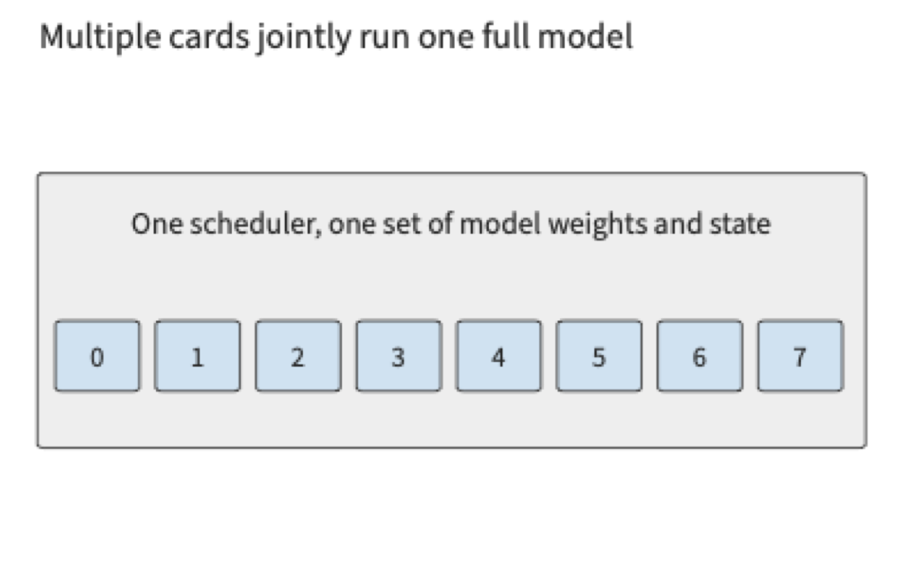
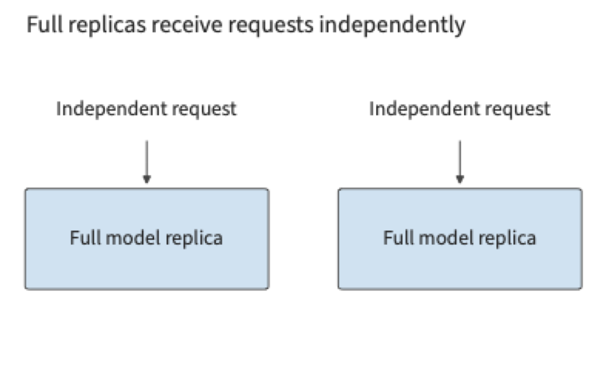
Full replicas divide work by request; in Figure 9-3, the same request passes successively through two service pools. Following the arrow from P to D, what is handed off is the context KV left by input processing; the two pools each still execute the complete model for their respective stage.
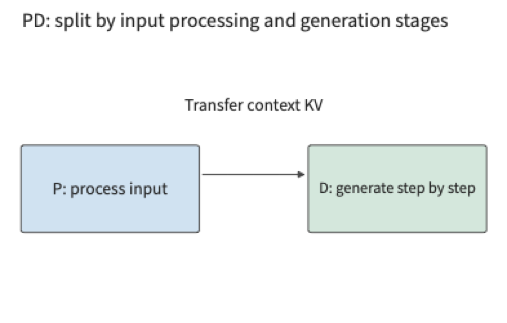
Figure 9-4 moves the boundary inside the model layer: activations produced by the attention side are handed to the feedforward side, and the result is returned. Compared with a single stage handoff, this data path must be traversed repeatedly at every layer, on every step of generation.
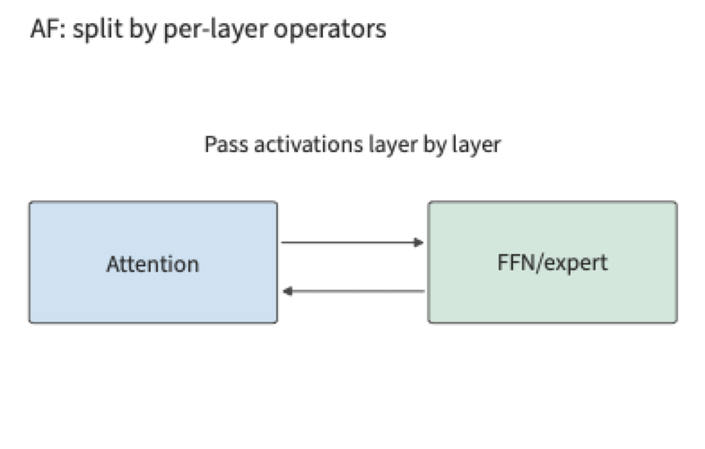
When comparing these deployment schemes, first use the run configuration and processing speed obtained in Chapter 8, then change the division of labor among compute resources. The mode in which P and D are handled by the same set of execution resources is called co-location. Consider an already-tuned co-located instance. A request has input length \(L\) and total output length \(G\); prefill computes the logits for the last input token and samples the first output from it. Under the generation convention adopted in this chapter, the subsequent decode calls number \(G-1\): the last returned token has not yet been fed back into the model, so the output count exceeds the number of subsequent decode calls by one.
For a given request distribution, let \(d_r\) denote the average service time a request consumes on resource \(r\), with \(n_r\) independently working units of that resource type. The arrival rate and resource occupation time must satisfy
where \(\lambda\) is the arrival rate. If multiple operations use the same resource, their occupation times should first be summed; if operations use mutually independent resources, a separate constraint should be listed for each resource type. Resource occupation is measured as "number of resources × seconds occupied"; the resource in this chapter is the GPU, and this product is denoted GPU-seconds. For example, if four requests arrive per second and each occupies 0.5 GPU-seconds, two continuously working GPUs are needed. With exactly two cards, bursts of extra arriving requests would keep backing up, because both cards stay busy with the steady stream of subsequent requests; only adding GPUs can absorb the burst.
Suppose each request occupies \(d_P\) and \(d_D\) seconds for prefill and decode respectively on a given replica type, and the two stages execute serially on that replica; then the request-rate upper bound for \(N\) identical co-located replicas is
Section 9.2.3 will derive the per-stage service times of the two card types introduced at the start of this chapter from spec-sheet peak figures. One A100 needs about 0.86 seconds to process one prefill of 8192 tokens, and a request's 1024 decode calls together occupy about 1.76 GPU-seconds; one H20 needs about 1.81 seconds for prefill, and its decode occupies only about 0.88 GPU-seconds. Since each full replica must handle both stages, one A100 occupies 2.62 GPU-seconds per request, and one H20 occupies 2.68 GPU-seconds. The eight cards together complete about 3.02 requests per second, below the arrival rate of 3.5 requests per second, backing up about 0.5 requests per second. The question thus becomes concrete: with the same eight cards, can re-dividing the work close this 0.5 requests/s gap?
A replica can also be built from multiple cards jointly. For example, one TP2×EP4 deployment of Qwen3-235B-A22B (TP splits the expert matrices in two, EP splits the experts into four groups) uses eight cards to handle the same batch of requests: every two cards share an expert matrix, and the four EP groups each hold different experts. Attention and KV are each replicated once per EP group, so a single request's 8192-token context occupies 5.875 GiB across the whole instance — four times a single logical KV copy. These eight cards together form one inference instance; adding a replica able to handle requests independently would require setting up an entirely separate set of weights and state.1
9.1.2 Computation Division and State Sharing¶
Adding full replicas changes how requests are allocated; PD separation changes where prefill and decode execute; AF separation changes where attention and FFN/experts execute; shared KV changes the scope over which context state is saved and read. These deployment schemes each change a different part of the system, and can be introduced one at a time or combined.
| Deployment scheme | Desired benefit | Main new constraint introduced |
|---|---|---|
| Adding full replicas | Handle more independent requests, spread out queueing | Model replication, scattered caching, startup, and keeping instances running |
| PD separation | Configure capability for the two stages separately | KV handoff, simultaneous memory occupancy on both ends, two queues |
| AF separation | Let operators use the compute and storage resources suited to them | Per-layer activation round trips, synchronization, load balancing across pipeline stages |
| Shared KV | Reuse context across instances, reducing repeated prefill | Cache identifiers, reads, ready notification, invalidation, and space release |
Choosing a deployment scheme starts with analyzing the resource demands of the current workload. If the two stages have similar resource demands, full replicas may already balance the service adequately, and separation may only add handoff overhead. If many requests share long prefixes, cross-instance caching may be more valuable than further splitting the computation. Computing resource occupation and handoff time separately makes it possible to judge whether the current situation calls for adding replicas, separating stages, or sharing state.
9.1.3 Execution Path and State Residency Time for a Single Request¶
After settling on a division of labor, trace along one request's timeline to see which stages it passes through and what state it leaves behind. Figure 9-5 places the computation stages and state residency times of a multi-turn request on the same timeline. With visual input, the encoding stage E converts the image into features the model uses, and EC holds these encoding results for reuse. P processes these encoded results together with text, D generates the output step by step; after a tool returns, a new round of P processes the newly added information. Weights are typically retained across requests, activations mainly pass between adjacent operators, and KV grows with the positions already processed. During tool waiting, computation can pause, but the context state may still occupy memory.
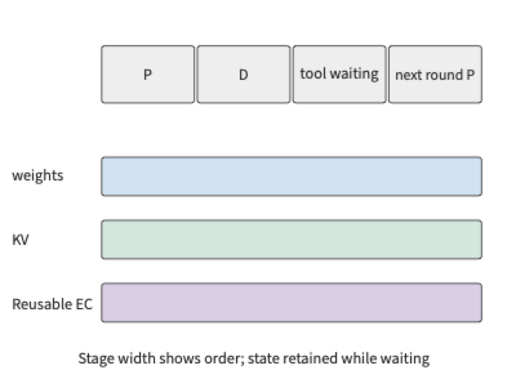
Take this chapter's Qwen3-8B as an example: an 8192-token BF16 context KV occupies 1.125 GiB. During 10 seconds of tool execution, the GPU can process other requests, but this context KV still occupies 1.125 GiB of memory, giving a capacity-times-duration product of 11.25 GiB·s; ten such sessions waiting simultaneously occupy 11.25 GiB. State must still be retained once computation pauses — this is exactly the problem that shared caching and eviction policies must solve.
If this request then returns 1025 tokens, P produces the first output, and the subsequent 1024 decode calls process the first 1024 generated tokens. At this point the contiguous KV covers \(8192+1024=9216\) tokens, with the last returned token not yet written into KV. The next turn continues after these 9216 tokens, first processing this not-yet-written trailing token together with the new input; generation resumes computation from this point.
9.2 Prefill–Decode Separation and Resource Ratios¶
9.2.1 Why Prefill and Decode Need to Be Separated¶
Prefill can process many new tokens in a single call, and the larger matrix computation involved tends to reuse weights more thoroughly. In the decode stage, each request typically processes only one new token per step, requiring repeated reads of weights and context state. When the two are mixed together, a long prefill can delay the next output of already-running requests; overly favoring decode, on the other hand, extends the wait for new requests.
Section 8.2 already used chunked prefill to shorten how long a long input can block decode. This section keeps the same model and requests, and further changes the execution location. PD separation places the two stages into different service pools, giving them independent queues, batching, and resource ratios. DistServe and Splitwise are inference systems that study separated P/D deployment. In a homogeneous cluster of eight A100 cards, separation eliminates scheduling interference between the two stages through independent queues. In a heterogeneous cluster of A100 and H20 cards, each card type can additionally handle only the stage it is good at.2
This division of labor resembles one person finishing reading material and then handing it to another person to continue: the person taking over needs the existing work record in order to continue. For this chapter's model, that record needing handoff is the context KV. P and D each process a different stage of the same request, and each stage must execute the complete forward pass. Qwen3-8B's P processes 8192 input tokens, and D subsequently makes 1024 calls; each pass goes through attention and the feedforward network. Both pools therefore need the complete model weights, and KV is handed from P to D. The benefit of independent batching must first outweigh this newly added handoff.
An application requests a complete model inference through a single call, while the service internally can arrange different resources by stage. The model's data dependencies determine where the boundary between stages falls, KV specifies the state that must be handed off between the two stages, and load proportions determine how many resources each pool needs. Using this information, a service can, beneath a unified call interface, choose batch size and compute resources separately for input processing and stepwise generation.
9.2.2 KV Transfer and Memory Occupation on Both Ends¶
Once P finishes processing the input, D needs the context KV in order to continue generation. GQA lets multiple query heads share one set of keys and values, storing the complete keys and values for each context token. Let \(n\) be the number of layers, \(L\) the context length, \(h_{kv}\) the number of KV heads, \(d_h\) the dimension per head, and \(b\) bytes per element; then the logical state size is
The coefficient 2 corresponds to K and V respectively. Qwen3-8B's fixed configuration is 36 layers, 8 KV heads, 128 dimensions per head. BF16 state occupies 144 KiB of KV per token; 8192 tokens occupy
Example 9.1: How long does the KV handoff between prefill and decode take? The A100 server and H20 server are connected via a 200 Gbit/s RDMA NIC, with unidirectional payload bandwidth taken as 25 GB/s, using a full-state direct handoff. The pure payload transfer time is
Adding one 5 μs startup and synchronization step, the total time is still about 48.3 ms: for this complete KV data, fixed overhead accounts for only about one part in ten thousand, so raising the payload bandwidth is what most helps shorten the wait. In the small per-transfer data volumes of AF's layer-by-layer handoff, by contrast, fixed overhead makes up a much larger share.3
The state sizes above come from GQA's storage method. MLA (Section 2.3.2) does not store the expanded keys and values, but instead stores the latent variable before the up-projection: each token at each layer has only one \(d_c\)-dimensional latent vector and one \(d_r\)-dimensional positional branch, giving a state size of
DeepSeek-V3's fixed configuration is 61 layers, \(d_c=512\), \(d_r=64\); under BF16 each token occupies \(61\times576\times2=70{,}272\) bytes, about 68.6 KiB, and the same 8192-token context occupies 549 MiB. Using the 25 GB/s link from Example 9.1, pure payload transfer takes about 23.0 ms; at 50 GB/s it drops to 11.5 ms; on the same link, the GQA state needs 24.2 ms.
| Handoff state | Per token | 8192 tokens | 25 GB/s | 50 GB/s |
|---|---|---|---|---|
| Qwen3-8B, BF16 GQA | 144 KiB | 1.125 GiB | 48.3 ms | 24.2 ms |
| DeepSeek-V3, BF16 compact MLA | 68.6 KiB | 549 MiB | 23.0 ms | 11.5 ms |
MLA's state is smaller because the cache sits on the other side of the linear transformation: GQA stores the expanded \(K\), \(V\) for each KV head, while MLA stores only the latent variable before up-projection; by associativity, the up-projection can be moved to the current query side for execution. If DeepSeek-V3's 128 heads were also stored expanded, each token would occupy \(61\times128\times(192+128)\times2\) bytes, about 4.77 MiB — 71 times the compact representation; compared with Qwen3-8B's GQA, which has only 8 KV heads, compact MLA is still only 0.48 times as large. In the rest of the chapter, wherever KV bytes enter a formula, results for both states are given side by side.6
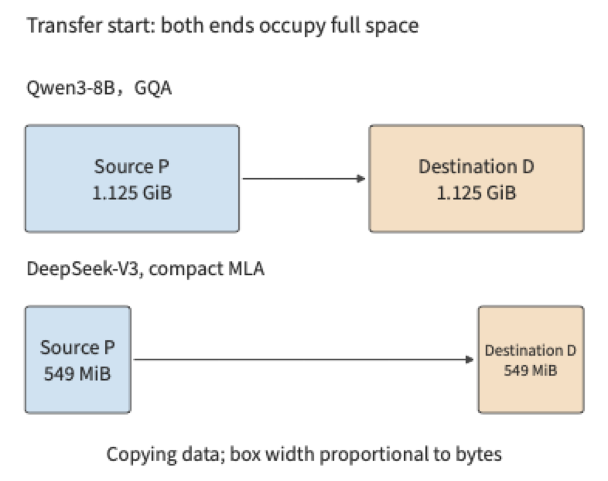
Under full-state double-buffered handoff, the source retains the complete state and the destination allocates a complete receive buffer until the transfer finishes. Figures 9-6 through 9-8 depict, in turn, the moments of handoff start, transfer completion, and source release. Once the payload has been fully written to the destination, P issues a completion marker; D reads the state only after seeing this marker (Figure 9-7); P releases the source buffer only after execution authority passes to D (Figure 9-8). With chunked transfer, once the destination confirms receipt of a given chunk, the source can release that chunk early, shortening the period during which both ends hold duplicate state; the destination relies on completion markers to determine which contiguous chunks are already usable. If routed through host memory, the state occupies source, host memory, and destination buffers in sequence, and the copy from host memory to GPU becomes a new dependency edge.
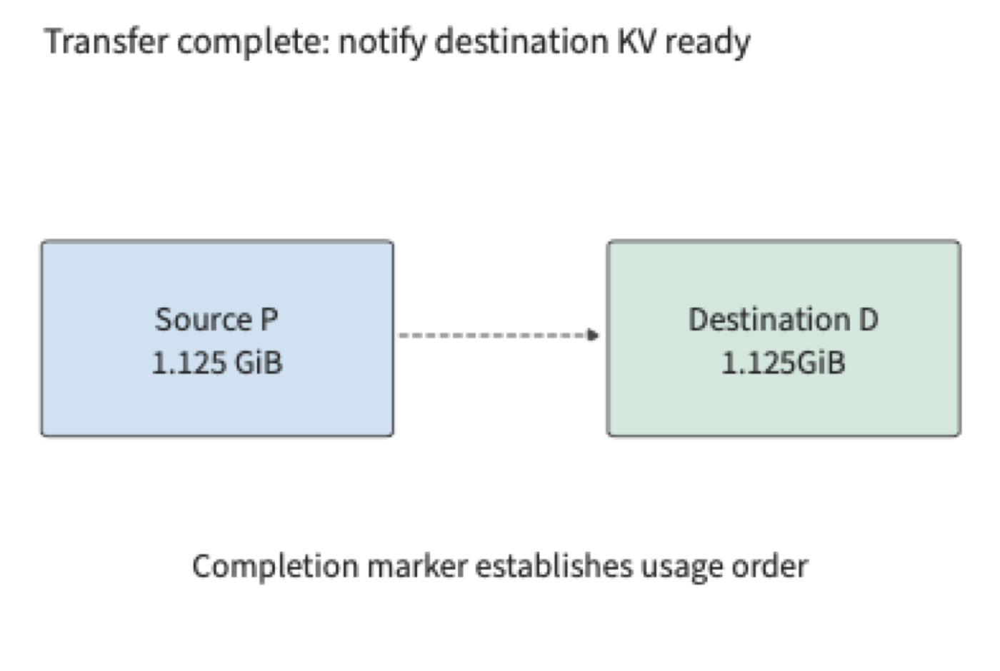
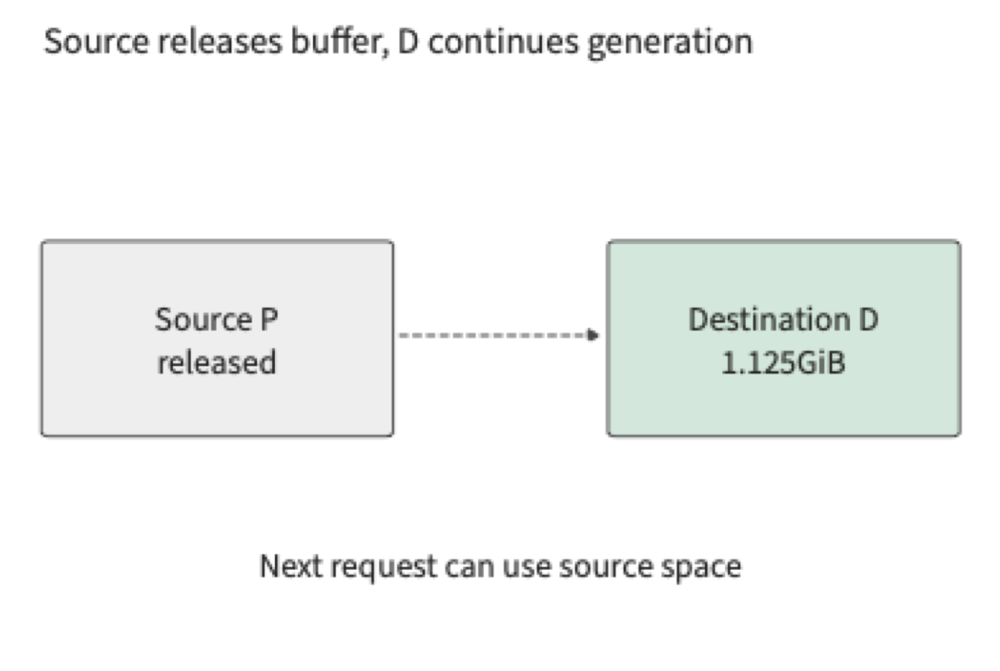
When requests arrive continuously, link bandwidth limits both how many state handoffs can complete per second and how long each handoff takes. Eight such handoffs per second require about 9.7 GB/s of transfer bandwidth; sixteen per second require about 19.3 GB/s. A 100 GbE (100 Gbit/s Ethernet) port, with 12.5 GB/s per direction, can meet the average demand of the former, but each request still has to wait for its transfer to finish; the latter case differs: even with idle compute capacity in both pools, the network queue will keep growing. In the first scenario, each state takes about 96.6 ms to finish transferring; in the second, about 6.8 GB of untransferred data accumulates each second. The transfer time determines the minimum wait for a single request, while the difference between data arrival rate and transfer rate determines how fast the queue grows. Switching to the 549 MiB compact MLA state, eight and sixteen handoffs per second require only about 4.6 and 9.2 GB/s respectively, and the same 100 GbE port can meet the average demand of both, with each state finishing transfer in about 46.1 ms. Whether the queue grows is jointly determined by state byte count and link bandwidth; changing the model's context representation can flip the conclusion for the very same link.
9.2.3 Stage Throughput and Instance Ratios¶
Before comparing per-stage processing speed, first compute how much work a single request requires at each stage. Let a request have \(L_{new}\) tokens that P must newly process, and \(G-1\) decode calls. If a given card type's effective throughput is \(r_P\) new tokens/s and \(r_D\) decode calls/s, that worker's per-request resource demand is
Here, resource occupation times can be added directly; input tokens/s and output tokens/s must first be converted into the demand of a single request. When multiple requests within a batch share one decode call, the completed decode step is credited to all requests, but resource occupation time is counted only once for that single batch execution.
The \(r_P\) and \(r_D\) of the two card types can be derived from spec sheets. The Roofline model in Chapter 4 gives a lower bound on per-stage time: the larger of compute time and memory-access time. The table below lists the peak figures for the two cards. H20's compute throughput is less than half that of A100, while its memory bandwidth is about twice A100's — exactly why H20 suits decode but not prefill.
| Card | BF16 dense compute | Memory bandwidth | Memory capacity |
|---|---|---|---|
| A100 80GB SXM | 312 TFLOP/s | 2039 GB/s | 80 GB |
| H20 SXM5 96GB | 148 TFLOP/s | 4096 GB/s | 96 GB |
Actual kernels fall short of peak. Section 8.6.3 calibrated two efficiency figures using round-by-round records on the RTX PRO 6000: decode's bandwidth efficiency rises from 33% at batch size 1 to 65% at batch size 64, interpolating to about 49% at batch size 32 based on measurements from both sides; prefill's compute efficiency holds steady at 58%–62%. This chapter takes both as 50% of peak: the decode figure matches the interpolated value at batch size 32, while the prefill figure runs about ten percent below measurement. With this choice, A100's effective compute and bandwidth are 156 TFLOP/s and 1020 GB/s, and H20's are 74 TFLOP/s and 2048 GB/s.
Taking 50% means setting both MFU and MBU from Section 1.2.2 to 0.5, meaning half of the hardware's capability never turns into model computation. By the criterion in Section 1.3.4, this half has two sources: one is work not accounted for in this chapter's first-order model, such as zero-padded rows from kernel tiling or communication not overlapped with computation; the other is host-side overhead that can be eliminated, such as submitting kernels one at a time, or rebuilding communication groups and execution graphs before switching. Sections 9.4.3 and 9.6.2 each give an example.
Substituting these two sets of effective throughput into the request introduced at the start of the chapter: prefill processes 8192 input tokens, requiring 133.6 TFLOPs of matrix computation but reading only about 15 GB of weights once, so it is compute-bound. A100 needs 0.856 seconds, processing about 9570 new tokens per second; H20 needs 1.81 seconds, about 4540 per second. One decode step generates one token each for 32 requests in a batch. Taking the average context during generation as \(8192+512=8704\) tokens, this step reads about 15.1 GB of weights and 41.1 GB of KV, while the matrix computation is only 0.65 TFLOPs — bandwidth-bound. A100 needs 55.1 ms per step, completing about 580 decode calls per second; H20 needs only 27.4 ms per step, about 1166 per second. The two card types' strengths are exactly reversed: A100's prefill is more than twice as fast as H20's, while H20's decode is twice as fast as A100's. At batch size 32, by the time a request finishes generating, KV occupies 43.5 GB total, plus about 15.1 GB of weights totals about 59.9 GB — well within either card's capacity.5
Consider the homogeneous case first: eight A100 cards executing the same model. Co-located, each card occupies \(0.856+1.764=2.62\) GPU-seconds per request, giving 3.05 requests/s for the eight cards together. After separation, the two pools can only be split by whole cards: three cards doing P provide 3.50 requests/s, five cards doing D provide 2.83 requests/s, giving an upper bound of 2.83 requests/s — 7% below co-location. Each request consumes the same number of GPU-seconds before and after separation, so homogeneous separation cannot raise throughput; integer partitioning also prevents the two pools' capacities from being exactly equal, and the surplus capacity simply sits idle.4
What homogeneous separation buys instead is more stable latency. Under co-location without chunking, one 8192-token prefill occupies an A100 exclusively for about 0.86 seconds, during which every in-flight request on that card stops generating — equivalent to missing about 16 decode steps of 55 ms each. If these eight cards receive 2.5 requests per second, each card on average must insert such a prefill every 3.2 seconds. After separation, D cards hold steady at 55 ms per step; P cards handle input exclusively, and the time-to-first-token is the 0.86-second prefill plus the KV handoff.
Chunked prefill from Section 8.2 offers another path besides separation. On A100, one decode step needs 55.1 ms for memory access but only 4.2 ms for matrix computation, leaving the rest of the time with idle compute. At 156 TFLOP/s, this idle span is enough to process about 490 prefill tokens. Splitting one 8192-token input into 17 chunks and piggybacking them across 17 decode steps gives a time-to-first-token of about 0.94 seconds, comparable to separation, while the output interval of in-flight requests stays unchanged. If the piggybacked computation is fully hidden within memory-access time, the upper bound for eight co-located A100 cards rises to 4.50 requests/s, far above separation's 2.83. How much can actually be hidden depends on whether chunking and decode running together can simultaneously saturate both compute and bandwidth, which requires judging from measured mixed-step timing. So on a homogeneous cluster, chunked prefill is usually adopted first; separation's value lies in letting the two stages choose parallelism strategy and batch size independently, and in thoroughly isolating each other's queueing.
Example 9.2: How does stage ratio determine the throughput upper bound in a heterogeneous cluster? Use 8192 input tokens and 1025 output tokens. The per-stage throughput of four A100 and four H20 cards is derived using the method above, as shown in the table below; when the request composition changes later, the same method will re-derive the figures for the new workload.
| Card | P throughput, new tokens/s | D throughput, calls/s | Per-request P GPU-seconds | Per-request D GPU-seconds |
|---|---|---|---|---|
| A100 80GB SXM | 9566 | 580 | 0.856 | 1.764 |
| H20 SXM5 96GB | 4538 | 1166 | 1.805 | 0.878 |
Co-located, one A100 occupies 2.62 GPU-seconds per request, one H20 occupies 2.68 GPU-seconds, and the eight cards together give 3.02 requests/s. Assigning the four A100 cards to P and the four H20 cards to D, pool P provides \(4/0.856\approx4.67\) requests/s, pool D provides \(4/0.878\approx4.55\) requests/s. Each request requires a 1.125 GiB handoff. With one 200 Gbit/s NIC between the two servers, a bandwidth of 25 GB/s can hand off about 20.7 states per second, giving an overall throughput upper bound of
Here \(\mu_P\) and \(\mu_D\) are the request-rate upper bounds of pools P and D, and \(B_{net}\) is the bandwidth of the handoff link between the two pools.
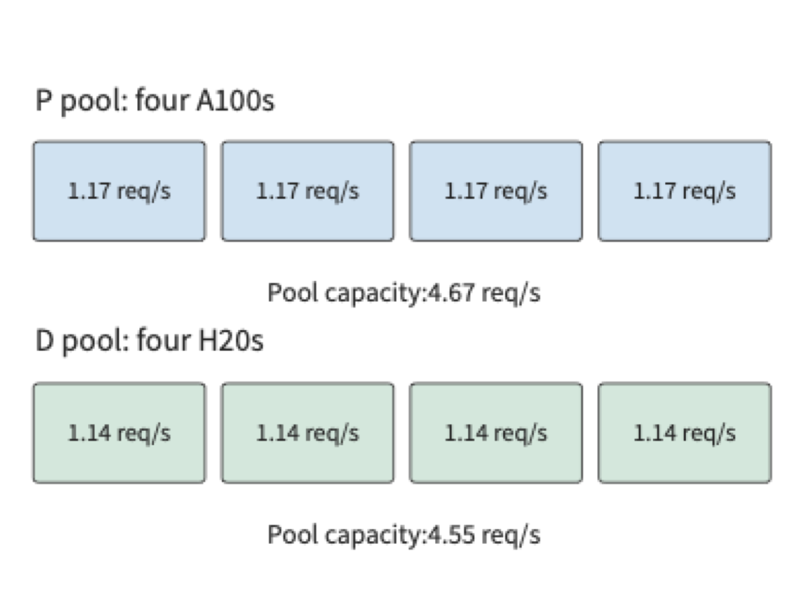
After separation, both card types avoid their respective slower stage, and the request-rate upper bound rises from 3.02 to 4.55 requests/s — 1.51 times co-location, and above the arrival rate of 3.5 requests per second. The model still processes the same 8192 input tokens and 1024 decode calls; the difference is who executes them. Swapping roles, with H20 doing P and A100 doing D, pool P drops to only 2.22 requests/s, giving a throughput upper bound less than half that of the correct division of labor.
The chunked piggybacking compared earlier on the homogeneous cluster has limited effect on H20: one H20 decode step's idle compute is only enough to process about 85 prefill tokens. Under ideal piggybacking, the upper bound for four A100 plus four H20 co-located is 4.17 requests/s, still below separation's 4.55. The heterogeneous cluster's benefit comes from the hardware's own differences; chunking cannot substitute for it.
Another condition that can be changed is the handoff state itself. Switching the handoff state to compact MLA raises the link term of \(\mu_{PD}\) from 20.7 to 43.4 requests/s, and at a 50 GB/s link from 41.4 to 86.9 requests/s; the upper bound is still set by pool D's 4.55 requests/s, and the ratio of four A100 for P and four H20 for D remains unchanged. The condition under which the link becomes the binding constraint is \(B_{net}<\mu V_{KV}\): at 4.55 requests/s, the GQA state requires a link of at least about 5.5 GB/s, while the compact MLA state requires only about 2.6 GB/s. Above this value, further raising bandwidth does not change the throughput upper bound; below it, in Figure 9-10 every cell above \(B_{net}/V_{KV}\) gets flattened by the link to the same value.7
What the compact path saves is bytes, not all of the work. By the associativity in Section 2.3.2, the up-projection has moved to the query side: DeepSeek-V3 must additionally perform, per layer per query token, one \(128\times128\times512\) query transformation and one value-restoration of the same size, totaling 33.5 MFLOPs; across 61 layers that is 2.05 GFLOPs — the same as the per-token expanded computation of the KV up-projection (kv_b_proj) in Table 2-3. This extra computation scales linearly with the number of requests in the batch: one decode call serving \(B\) requests adds \(2.05B\) GFLOPs. At H20's effective 74 TFLOP/s, each request adds 27.7 μs per step, totaling 28.3 ms over 1024 steps. If this extra computation cannot be hidden within memory-access time, pool D's per-request GPU-seconds rise from 0.878 to about 0.907, and pool D's throughput drops from 4.55 to about 4.41 requests/s — still above the 3.5 arrival rate; a fifth D card would only be needed once the extra per-request per-step computation exceeds about 258 μs. What the compact path changes is where the D instance's bottleneck sits: per-token reads drop from the expanded state's 4.77 MiB to 68.6 KiB, while the computation term grows with batch size, so the D instance shifts from being read-bound to compute-bound at a smaller batch size. Example 9.2's \(r_D\) was derived at batch size 32; switching to compact MLA requires re-deriving it at the new crossover batch size.
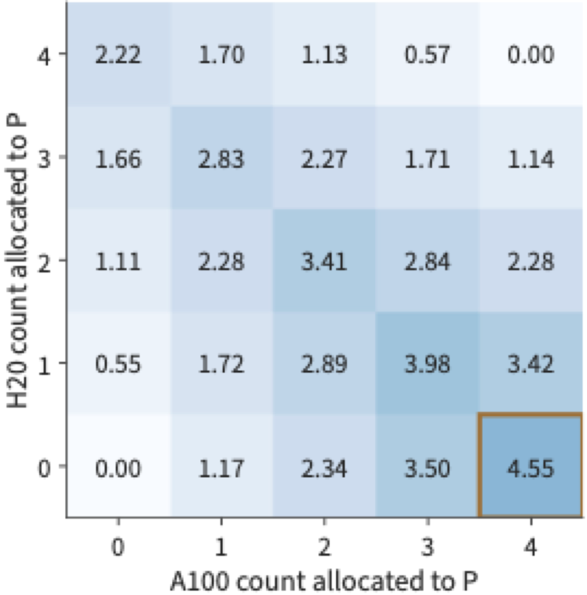
Figure 9-10 also shows how the throughput rate changes when the ratio departs from the optimum. Moving one A100 from P to D drops P from 4.67 to 3.50 requests/s and raises D from 4.55 to 5.12 requests/s, with the result capped at 3.50 by P. Moving one H20 from D to P raises P to 5.22 requests/s but drops D to 3.42 requests/s—again slower overall. The optimal ratio brings the two pools' capacities close to equal. Once the ratio departs from that point, one pool having spare capacity cannot make up for the other pool's shortfall.
9.2.4 The Benefit Boundary Under Different Requests and Loads¶
Example 9.2 fixed the request composition; now we change just one condition: prefix hit. P has already cached the first 6144 tokens and only needs to process the remaining 2048. With new tokens cut to a quarter, the A100's prefill time drops from 0.856 s to 0.238 s, and one A100's P capacity rises from 1.17 to 4.20 requests/s; if P still gets four A100s, they can together handle 16.8 requests/s, while D can still only handle 4.55 requests/s.
Move two A100s to D, leaving two that provide 8.41 requests/s of P capacity; D is then provided by two A100s and four H20s, giving \(2/1.764+4/0.878\approx5.69\) requests/s. The overall throughput ceiling rises to 5.69 requests/s. Moving away one more A100 leaves P with only 4.20 requests/s—slower instead. Assume D has not cached this prefix, so both ratios still must hand off the complete 1.125 GiB; P's computation dropped by more than seventy percent, but the KV size passed to D is unchanged.
Now restore the original input and shorten the output to 129 tokens—an ordinary conversation without a reasoning trace. The number of D calls drops from 1024 to 128, one H20's D capacity rises to about 9.46 requests/s, and D is almost no longer the bottleneck. The optimal ratio becomes four A100s plus three H20s doing P, one H20 doing D, with the P pool providing \(4\times1.168+3\times0.554\approx6.33\) requests/s. Co-location at this point already reaches 5.84 requests/s, so separation improves it by only 8.5%.
Figure 9-11 plots the three adjustments on the same set of compute resources. Each square is the same card as before; only the stage it handles changes. After the prefix hit, P's workload shrinks, freeing up two A100s; once the output shortens, D's workload shrinks, and three H20s shift to doing P.
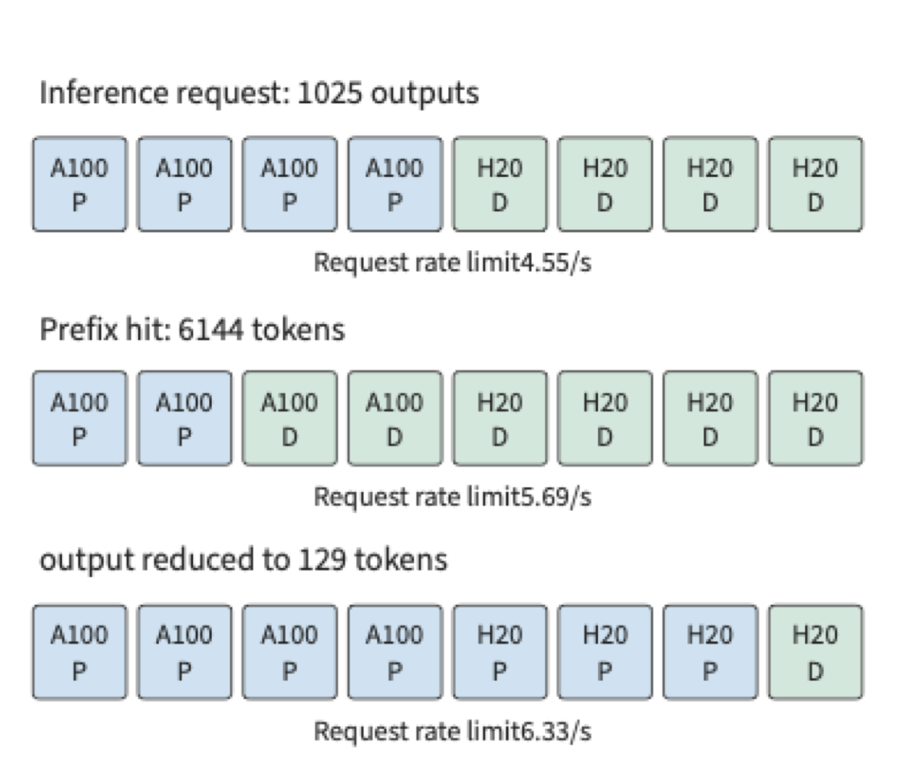
The most suitable number of P cards for these three requests is four, two, and seven, respectively. A prefix hit reduces P's new work and pushes resources toward D; a shorter output reduces D's repeated work and pushes resources toward P. The longer the inference request's output, the greater D's share, and the more valuable bandwidth-strong, compute-weak cards like the H20 become. This lets us split scheduling into two timescales: which queue to enter when a request arrives, and adjusting pool sizes as the load distribution continues to shift. Queue assignment determines immediate waiting; pool sizing determines whether backlog can subside over the long run.
9.3 Attention–FFN Separation and Heterogeneous Execution¶
9.3.1 The Execution Boundary Between Attention, FFN, and Experts¶
AF refers to the division of labor between attention and the feedforward network. Unlike PD, which splits two generation stages at a time, AF splits computation within a model layer: attention produces the hidden state, the feedforward network or the selected experts process that hidden state, and the result is sent back for subsequent operators to use. The next layer typically must wait for this result, so the startup and synchronization cost of small data transfers repeats many times.
MoE is especially well suited to this division of labor: total expert weights are large, but each token selects only a subset of them. If most experts reside in host memory, the selected weights can be moved to the GPU, or the CPU can use its local weights to do the computation and pass along a smaller activation instead. The former path trades link bandwidth for GPU compute; the latter trades CPU compute for less link traffic. Which to choose depends on how many tokens are dispatched to the same expert in this batch: each token's feature vector occupies one row of that expert's input matrix, and these rows reuse the same set of expert weights.
9.3.2 CPU/GPU Collaboration¶
The two paths in the previous subsection deliver the same output; they differ in what crosses the link: Figure 9-12 sends weights, Figure 9-13 sends inputs and outputs. Section 8.4.3 uses the first path, staging weights in host memory and moving them to the GPU when needed. KTransformers is an actual system that takes the second path: the GPU handles attention and some always-resident experts, the CPU handles the experts assigned to it; after submitting the CPU's share of the work, the GPU continues executing branches that can run in parallel, and finally synchronizes and merges the results. Hotspot experts, shared experts, and the prefill stage can each use a different division of compute resources. When the branches converge, the next layer must wait until both sides finish before it can start.8
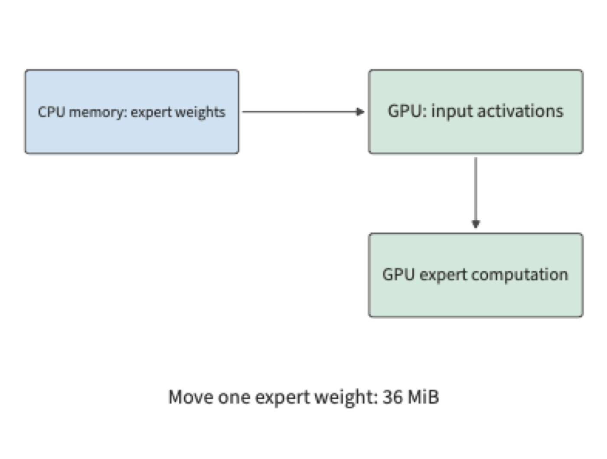
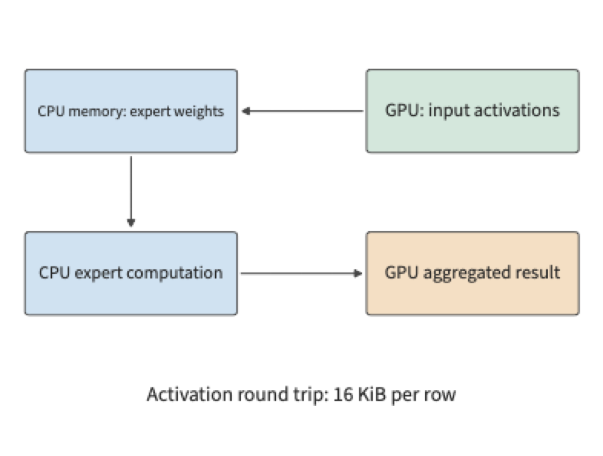
The overhead of both paths depends on the size of one set of expert weights. For Qwen3-235B-A22B, one expert contains three matrices, with a parameter count of \(3\times4096\times1536=18874368\). BF16 weights are 36 MiB.
Example 9.3: How does expert weight reuse change the CPU/GPU execution choice? Using the experimental machine from the KTransformers paper: two Intel Xeon Platinum 8452Y CPUs, each with 36 cores and 1 TB of DDR5, connected via PCIe 4.0 to one A100 40GB PCIe. The paper measured, using Intel's memory testing tool MLC, a memory bandwidth of 220 GB/s within a single CPU socket. Running the MoE layer on a single CPU, PyTorch's kernel based on AVX-512 (a 512-bit vector instruction set) reaches at most 1.8 TFLOP/s; KTransformers's kernel based on AMX (Advanced Matrix Extensions) matrix instructions reaches at most 21.3 TFLOP/s. For the GPU, we take 50% of the A100 40GB PCIe's peak 312 TFLOP/s and 1555 GB/s, i.e., 156 TFLOP/s and 778 GB/s. PCIe 4.0 x16's theoretical bandwidth is 32 GB/s; the handoff is figured at 25 GB/s, with a 5 μs startup per launch, and BF16 activation width is 4096. The eight experts execute in sequence, with total time being the sum of each expert's time, and weights read once per batch. When each expert receives only one token's feature vector, the CPU reads the weights directly from local host memory, avoiding moving 36 MiB over the slower link; as the number of input rows per expert grows, the cost of moving the weights once is amortized over more rows of computation, while the CPU hits its compute ceiling sooner.
First consider eight hotspot experts each processing one token: the weights total 288 MiB. Reading this over 220 GB/s host memory takes about 1.37 ms, and with the activation handoff the CPU path takes about 1.46 ms; the path moving to the GPU, just transferring the weights, takes about 12.1 ms, and with startup and GPU compute, about 12.5 ms. At low reuse, avoiding a large weight transfer is more valuable than raising matrix throughput.
If these eight experts each process 128 tokens, the weights are still 288 MiB, but the computation grows to 128 times as much. With the AVX-512 kernel, the CPU path grows to about 22.2 ms, while the GPU path is about 12.5 ms—now computing on the GPU is faster. Figure 9-14 plots the intermediate progression: as each expert's input grows from 71 to 72 tokens, the GPU starts to beat the CPU. Switching to the AMX kernel, at 128 tokens the CPU path needs only about 2.57 ms, about a fifth of the weight-moving path, and the crossover is pushed back to 689 tokens per expert. Running the same requests on the same machine, which instruction set the CPU uses determines which side an expert should sit on. Every additional token an expert processes adds more compute time on the CPU than on the GPU, while the weight-moving overhead stays fixed, so past the crossover point the GPU wins out.9
![Figure 9-14: Expert reuse shifts the choice of execution location. Eight experts, each with 36 MiB of BF16 weights. The CPU is a single Xeon Platinum 8452Y, with AVX-512 and AMX kernels figured at the paper's measured 1.8 and 21.3 TFLOP/s respectively, and same-socket memory at 220 GB/s; the GPU is an A100 40GB PCIe, figured at 50% of peak, i.e., 156 TFLOP/s and 778 GB/s; the PCIe handoff is 25 GB/s with a 5 μs startup per launch. The horizontal axis is on a log scale; the curves compute a single-layer expert path per Example 9.3, excluding format conversion.](images/figure-9-6-reuse.png)
Let's write the above numbers in general form. Let the expert's parameter count be \(P_e\), weight byte count be \(W_e\), input width be \(h\), and bytes per element be \(b\). If the same expert receives \(m\) tokens in this batch, its matrix computation is \(F_e(m)=2mP_e\) FLOPs, and the weights must be read at least once. Let effective CPU compute and DRAM bandwidth be \(C_C,B_D\), GPU compute and HBM bandwidth be \(C_G,B_H\), and the handoff bandwidth be \(B_L\). Assuming weights and activations are already in the format needed for execution, that the handoff and expert computation happen serially, and that operator time takes the larger of computation and weight-read time, the time for a single expert under the two execution methods is, respectively,
The first equation sums input transfer, expert computation on the CPU, and output transfer; the second moves one copy of the weights first, then executes GPU computation. The \(\alpha\) in these equations is the fixed cost per handoff. The input activation arrives at the CPU first, and the output activation returns after computation; the two startups and round-trip payloads in the equation correspond exactly to these two dependency edges.
Hardware changes can be estimated with the same set of equations. Under a NUMA architecture, a thread reading memory on another CPU must go through the inter-processor interconnect. The paper measured this machine's cross-socket bandwidth at only 125 GB/s. The CPU path's time takes the longer of weight-read and matrix computation; Figure 9-15 plots these two terms side by side at 128 tokens per expert. With the AVX-512 kernel, computation is far longer than reading, so it hardly matters which socket the memory sits in; switching to the AMX kernel, computation shrinks to just slightly longer than same-socket reading, and once reading crosses sockets, reading instead becomes the longer term. Whether in-place computation pays off is determined by the current dominant bottleneck: when read-bound, raising host memory bandwidth helps; when compute-bound, raising matrix throughput helps. The quantization format changes both terms at once: fewer weight bytes, and the matrix kernel's effective throughput changes accordingly.10
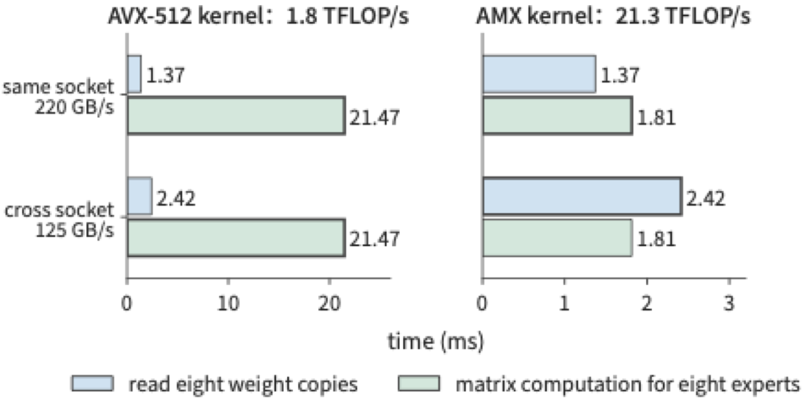
9.3.3 The Effect of Capacity, Concurrency, and Expert Reuse on Service Capability¶
Whether the weights fit and whether requests complete in time are two different questions. Qwen3-235B-A22B's 128 BF16 experts per layer together occupy 4.5 GiB. If 32 experts per layer are fixed as GPU-resident, a single layer is 1.125 GiB, and across 94 layers that totals about 106 GiB. Even giving the entire 80 GB (about 74.5 GiB) of an A100 80GB's memory to experts cannot hold this set of always-resident experts; it still needs to be split across multiple cards, or the per-layer resident count needs to be reduced. Cutting the per-layer resident count to 16 brings these weights down to about 53 GiB, but also hands off more experts' execution to the host-memory side. The capacity choice thus directly changes a request's execution path.
A token selecting eight experts does not mean a batch also touches only eight experts. Section 6.3.2 already worked out this batch of dispatches: 64 tokens each selecting eight experts gives 512 dispatches total; when spread evenly across 128 experts, each expert processes four rows, while when concentrated on eight experts, each expert processes 64 rows—in both cases the expert matrices' effective computation is \(512\times2\times18874368\), about 19.3 GFLOPs; but if each set of expert weights in the batch is read only once, the weight reads are 4.5 GiB versus 288 MiB, a 16-fold difference. On the 220 GB/s host memory of Example 9.3, weight-read alone takes about 22.0 ms versus 1.37 ms respectively: same amount of computation, but read time differs by an order of magnitude.
The total expert count determines how much weight needs to be arranged, the dispatch count determines this batch's effective matrix computation, and the set of experts touched within the batch determines which weights need to be accessed. Figure 9-14 has already shown that the number of input rows determines which side, CPU or GPU, is faster. One more quantity needs to be added: how many experts a batch of requests will actually touch. Knowing this number lets us extend the single-expert result to the whole batch.
Besides the fully even and fully concentrated cases, we can also analyze how many experts random routing touches on average. Following the derivation in Section 6.3.2, when each token independently and uniformly selects \(K\) distinct experts out of \(E\) experts, the expected number of active experts across \(M\) tokens in a batch is
Substituting \(E=128,K=8,M=64\) gives an expected value of about 126 experts, with an ideal weight-read of about 4.43 GiB, close to the uniform-coverage case above. As batch size keeps growing, the number of distinct experts touched tops out at 128 and stops increasing, while the dispatch count keeps growing linearly, so newly added tokens increasingly reuse weights that are already loaded.
This analysis also shows that a server equipped with large host memory and few GPUs is better suited to workloads where each expert receives few input rows. DeepSeek V4-Flash's published single-RTX-5090 configuration requires at least 200 GB of host memory, and Kimi K2's configuration with Q4_K_M group quantization (mostly 4-bit, with some tensors at higher bit widths) requires about 600 GB of host memory. Host memory solves the problem of fitting total weights; as request batch size grows, the bottleneck can still shift from weight reading to CPU matrix computation. The crossover point in Figure 9-14 corresponds exactly to this shift: increasing concurrency both amortizes the cost of reading weights and gradually exhausts CPU compute capacity.11
9.3.4 Cross-Machine AF, Expert Separation, and Micro-Batch Pipelining¶
The two previous subsections still divided labor between the CPU and GPU within the same server. In MoE, routed experts can also be moved to an independent expert resource pool, with the worker that retains attention and KV sending activations and receiving expert results. This is called expert separation (Expert Disaggregation), also often called EP separation; this book uses "expert separation" to refer to the deployment boundary, and EP to refer to the expert-parallelism degree. Expert separation is one form of the division of labor between attention and expert computation discussed in this section; a specific system must further specify which side holds the shared experts, the router, and the pre/post projections.
Take the two HGX H100 servers from Chapter 7 as an example, and examine how one MoE layer executes under expert separation (Figure 9-16). Server A's four cards A0–A3 execute attention and hold the KV for their own requests; Server B's four cards B0–B3 each hold a quarter of the routed experts. Within one layer, four steps occur in sequence. First, the A cards finish attention, and the router selects 8 experts for each token. The second step is the dispatch described in Section 6.2.6: the A cards group each token's hidden state by the card holding its selected experts and send it to the corresponding B card. All four A cards must send unequal-sized batches of data to all four B cards, forming one All-to-All. Third, after the B cards receive inputs from each source, they rearrange the input rows by expert and execute the expert matrix multiplication. The fourth step is combine: expert outputs travel back along the same path to the A card that owns the token; the A card collects all 8 outputs for one token and computes the weighted sum by routing weight, so it can proceed to the next layer's attention.
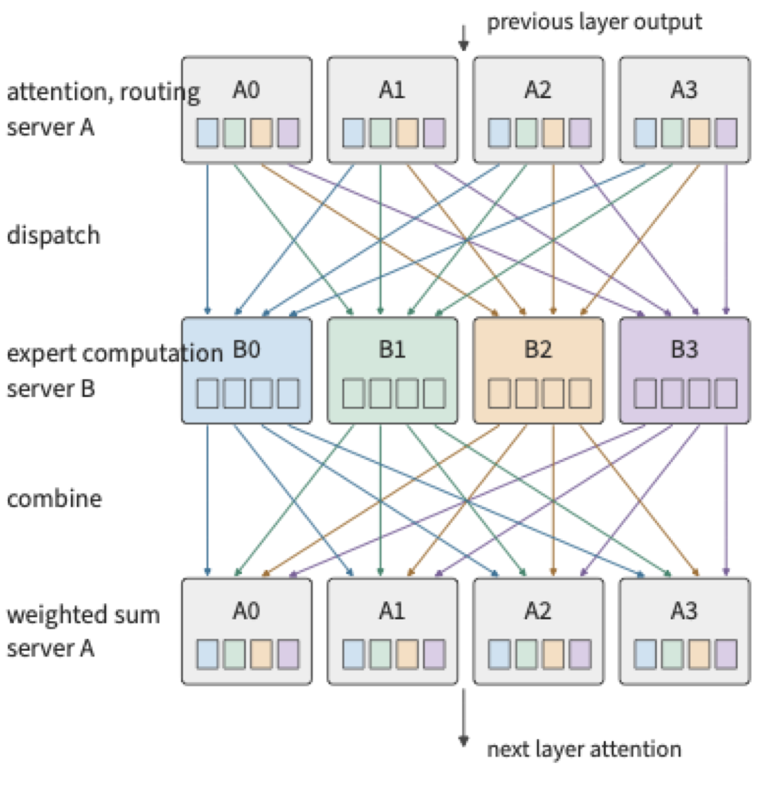
The figure shows two waiting points. A B card typically waits until inputs from all sources have arrived before starting computation, and an A card waits until all expert outputs for one token have returned before it can sum them. If one B card receives more and computes more slowly, it delays both its own computation and return, and every A card waiting on its result. The skew discussed in Section 9.4 acts precisely through these two waiting points to affect the whole layer's completion time.
Large EP refers to an expert-parallel group spanning many cards. Large EP lets each card hold only a few experts and aggregates input from multiple attention workers, so that experts get a sufficiently large matrix batch. Large EP need not use an independent expert pool: the same card can also execute attention and its own held experts simultaneously; nor need an independent expert pool contain only one large EP group. DeepSeek-V3/R1's published inference report gives prefill EP32 and decode EP144 (expert-parallelism degrees of 32 and 144, respectively), and adopts redundant experts (extra replicas placed for high-load experts) and multiple kinds of load balancing; this shows large EP has real practical use, but this scale by itself does not prove that attention and experts have been split onto two separate sets of devices.34
Scaling up EP does not automatically scale up each expert's batch size. If a batch has \(n\) tokens, each token selects \(k\) experts, and there are \(E\) logical experts in total, under uniform routing each expert averages only \(nk/E\) rows. For example, with \(n=1024,k=8,E=256\), that's 32 rows; spreading the same 256 experts from 32 cards to 128 cards leaves that average still at 32—only the number of experts per card decreases. Aggregating more input can increase each expert's batch size, but it also widens the scope of communication and synchronization: the two waiting points in Figure 9-16 must cover every card in the EP group. Fewer experts per card also increases cross-card skew; Section 9.4.1 uses the same \(n,k,E\) to compute how this grows with EP.
An expert pool can independently add replicas, choose different compute/memory ratios, and aggregate tasks from multiple attention workers. The cost is that expert input that could otherwise execute locally must now be sent across the pool, and the network becomes a resource shared by both pools. Only when multiple independent EP groups each hold a full set of experts can they serve as service replicas that can independently receive tasks; merely adding cards that hold part of the experts does not let every request freely bypass a busy expert. The queue, GPU memory, model version, and admission policy of a shared expert pool must be managed as a whole.
Once AF is extended from a single server to across servers, the startup time per transfer, link bandwidth, and the time skew at which each node begins execution all have a bigger impact. MegaScale-Infer is a distributed inference system that separates attention and expert computation. This system interleaves micro-batches between attention nodes and expert nodes, forming an alternating pipeline: while one micro-batch executes attention, another micro-batch executes expert computation. Ideally, if the two stages need \(t_A,t_F\) per micro-batch and we ignore the handoff, processing \(q\) independent micro-batches through the two-stage pipeline takes \(t_A+t_F+(q-1)\max(t_A,t_F)\). The first micro-batch costs \(t_A+t_F\), and after that one micro-batch completes every service period of the slower stage. Across layers, the returned activation connects the end of one layer to the start of the next.
MegaScale-Infer's experiments provide real evidence for this kind of deployment. Its 2025 paper uses Mixtral-8×22B, DBRX, and a 317B Scaled-MoE, with weights, activations, and KV all in BF16, and production requests with median input/output lengths of 571/159 tokens. The evaluation constraint is TPOT no more than 150 ms; on a homogeneous cluster of eight nodes with eight 80 GB Ampere GPUs each, Scaled-MoE's per-GPU decode throughput reaches 1.90 times that of NVIDIA's inference framework TensorRT-LLM. This result combines the joint effect of disaggregated placement, parallelism choices, pipelining, and the communication library, and should not be treated as a general speedup from "just turning on EP separation." The paper also explicitly configures redundant replicas by expert popularity and minimizes the cost of the busiest node, showing that even an independent expert pool still has to deal with skew.37
Let's compute this pipeline with a concrete example: suppose the attention and expert stages need 2 ms and 3 ms per micro-batch, respectively. Executing four micro-batches in sequence takes 20 ms total, with only one node working at any moment; the ideal two-stage pipeline needs only \(2+3+3\times3=14\) ms, saving 6 ms (Figure 9-17). If splitting into smaller micro-batches lengthens the actual service time per stage, or if round-trip communication that cannot overlap with compute exceeds 6 ms, this benefit disappears. So the combined extra time from reduced communication and compute efficiency must be less than 6 ms for pipelined execution to still be faster.12
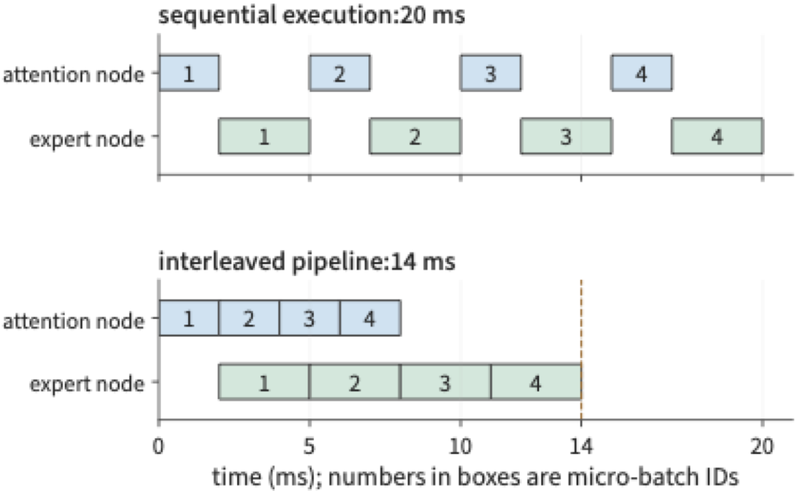
Example 9.4: How much extra communication overhead does layer-by-layer handoff between attention and the feedforward network add? In an example deployment of Qwen3-8B, with the 36 dense feedforward network layers placed on the other side, each layer sends one complete BF16 hidden-state vector and receives back a result of the same size. The one-way data volume per transfer is \(4096\times2=8192\) bytes; one decode step totals 72 transfers, 576 KiB. Using the same 25 GB/s NIC as Example 9.1, pure payload time is about 23.6 μs, and 72 launches at 5 μs each total 360 μs, giving a serial handoff of about 0.384 ms.
This time is shorter than the one PD handoff in Example 9.1, but the two correspond to different scopes of work: PD hands off once per request, while AF must hand off at every decode step. If the prefill of 8192 input tokens is also handed off as one whole batch of dense AF, the activation payload is 4.5 GiB, requiring about 193 ms of pure transfer, plus startup. PD's one-time move grows with context length, while AF's per-layer round trip repeats over and over with generation steps; the former is affected first by large KV transfers, while the latter is more susceptible to the startup overhead of small transfers and inter-operation dependencies.
AF's per-layer handoff doesn't change with the KV representation: it carries a 4096-dimensional hidden state, independent of the number of KV heads or the latent width, so one decode step is still 72 transfers, 576 KiB. What changes is the PD side. Setting the serial time of one PD handoff equal to that of one AF step,
where \(V_{AF}\) is the total payload of one AF step handoff (576 KiB), and \(B\) is the link bandwidth. Below \(\alpha^*\) startup time, one AF step handoff is faster than one PD handoff; above it, the cumulative overhead of 72 launches already exceeds transferring the entire state at once. For the GQA state, \(\alpha^*\approx680\) μs at 25 GB/s, 340 μs at 50 GB/s; for the compact MLA state, these are 324 and 162 μs respectively. The smaller the state and the faster the link, the less budget is left per launch. The 5 μs startup is far below all four of these thresholds (\(\alpha^*\) in each case), so looking at a single handoff step, AF is always faster. Comparing over the whole request, the conclusion flips: the cumulative 1024-step AF handoff is about 393 ms, 8.1 times the 48.3 ms of one GQA PD handoff, and 17 times the 23.0 ms of one compact MLA PD handoff. PD hands off only once, and MLA halves the cost of that one time; AF hands off every step, and the hidden-state width doesn't change, so it saves no bytes at all. The longer the output, the larger the gap.
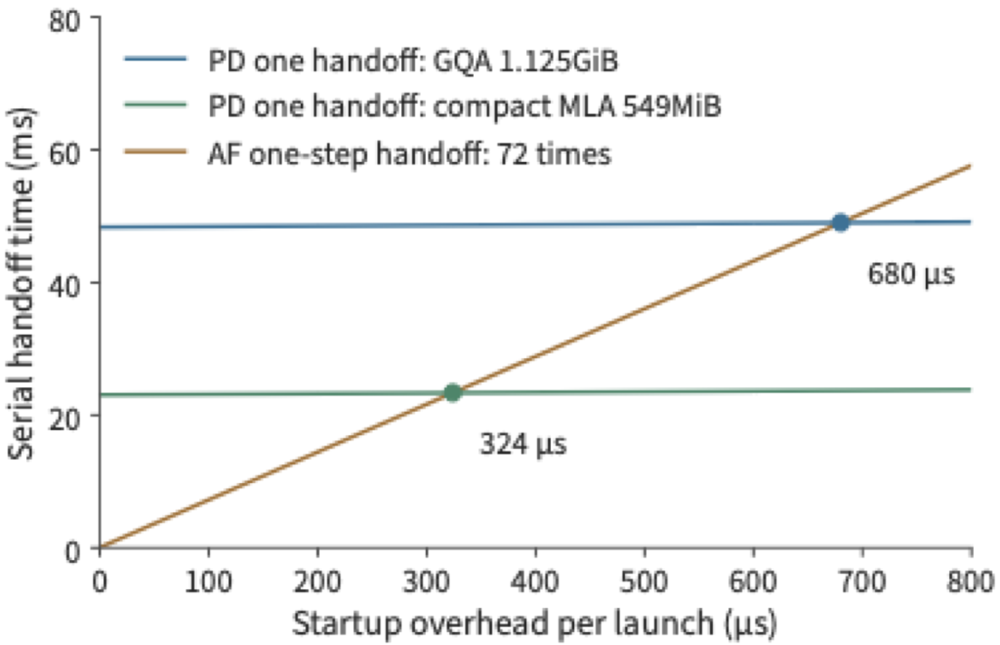
The next section examines activation transfer in MoE: each input may go to multiple execution locations, and completion still requires waiting for all the experts it selected to return their results before merging.
9.4 Expert Placement, Replication, and Load Balancing¶
9.4.1 Compute and Communication Skew in Large-Scale EP¶
In the previous section, concentrated reuse reduced weight reads. But if these hotspot experts all sit on the same card, other cards cannot share the load. This section continues tracking the same 512 dispatches, examining when each card finishes its computation. Even when total system-wide compute stays constant, the busiest card can delay the completion of the entire layer. For card \(r\), let \(F_r\) denote the matrix computation, \(W_r\) the bytes of weights it must read, and \(C_r\), \(B_r\) its effective compute throughput and bandwidth, respectively. That card's time to finish both computation and weight reading is at least \(\max(F_r/C_r,W_r/B_r)\); when merging results across cards, we must wait for the slowest one to finish.
Placing the previous section's 512 dispatches across eight cards reveals another side of concentrated routing. If each card handles exactly 64 tasks, each card processes about 2.42 GFLOPs; if all eight hotspot experts sit on a single card, that card processes roughly 19.3 GFLOPs in total. Taking the eight cards as an HGX H100 server from Chapter 7, each H100 SXM at 50% of its BF16 dense peak of 989.4 TFLOP/s gives 494.7 TFLOP/s. Looking only at compute, the busiest card's service time grows from about 4.9 μs to 39.1 μs — eight times the original.
In Figure 9-19, the length of each horizontal bar represents the time each card needs to finish its computation. Only after all results are merged can the next layer proceed, so it is the longest bar — not the average of the eight — that determines the completion time.
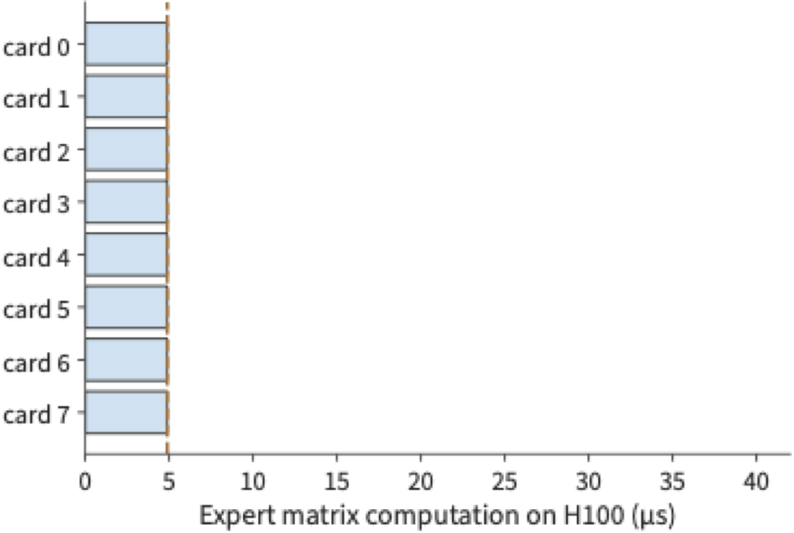
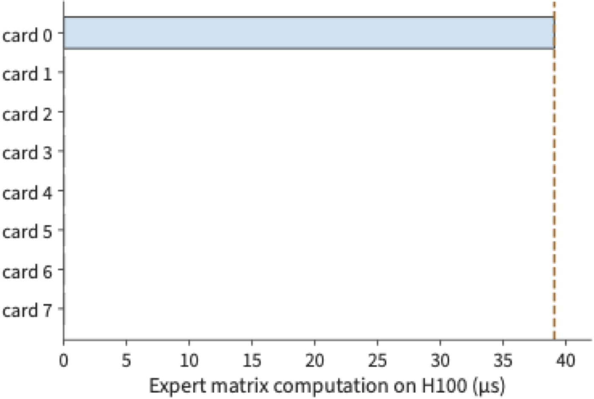
Concentrated routing reduces the weights that need reading from 4.5 GiB to 288 MiB, yet it can increase the busiest card's compute by a factor of eight. The former benefits read-bound execution; the latter harms compute-bound execution. A balancing strategy must therefore first identify where the bottleneck lies before deciding whether to pursue reuse or spread the work.
Even with unchanged total workload, large-scale EP amplifies this waiting. Following Section 9.3.4's \(n=1024,k=8,E=256\) (DeepSeek-V3 also uses 256 routed experts per layer with 8 selected per token): a batch of 8192 dispatches averages 32 rows per expert. Suppose one expert is hot, receiving 128 rows — 4 times the average — while the remaining 8064 rows split evenly across the other 255 experts, roughly 31.6 rows each. Distributing the 256 experts evenly by index across the EP group's cards, the card holding the hotspot expert handles its own 128 rows plus the rows of any other experts on the same card. At EP8, with 32 experts per card, the hotspot card gets about 1108 rows, only 8% above the per-card average of 1024; at EP32, with 8 experts per card, the hotspot card gets about 349 rows, 36% above the average of 256; at EP256, with only this one expert left per card, the hotspot card has 128 rows, 4 times the average of 32. The same hotspot expert gets diluted by its co-located experts at small EP but monopolizes an entire card at large EP — imbalance among experts translates directly into imbalance among cards (Figure 9-21).
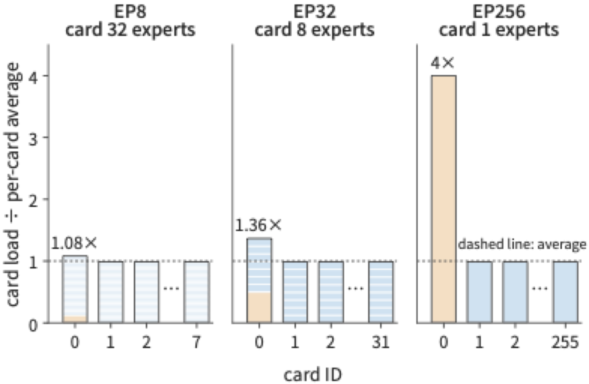
A card's row count simultaneously determines three things: the bytes it must receive during dispatch, the bytes it must send during combine, and — when expert computation is compute-bound — its matrix time. At 8 KiB per row and 50 GB/s per card's NIC, the EP256 hotspot card must receive 1 MiB, about 21 μs, while an average card receives only 256 KiB, about 5.2 μs. If the batch is small and expert computation is limited by weight reading, a card's matrix time depends mainly on how many sets of expert weights it must read, with little relation to row count — but the bytes exchanged in both transfers still scale with row count. Going from EP8 to EP256, the per-card average row count shrinks to 1/32, yet the busiest card's row count only drops from 1108 to 128 — about 1/8.7 of the original. Since the whole layer is timed by its busiest card, an average card at EP256 spends three-quarters of this stage idle, waiting.
Even without a hotspot, increasing EP still amplifies skew. Suppose each token independently and uniformly selects 8 experts at random; each expert's row count still fluctuates randomly around 32. The more experts on a single card, the more these fluctuations cancel out; the more cards there are, the greater the chance that one card in a given batch turns out especially busy. Simulating 1000 batches with a fixed random seed, EP8's busiest card averages only 4% above the per-card average, while EP256's busiest card averages 52% above (Figure 9-22). Both effects share the same cause: the larger the EP, the fewer experts per card can cancel each other out, yet the more cards there are to wait for. DeepSeek's published decode deployment uses EP144, with only 2 routed experts per card — near the right end of this curve; to compensate, it adds 32 redundant experts and adjusts replica counts by load, the technique discussed in Section 9.4.2.36
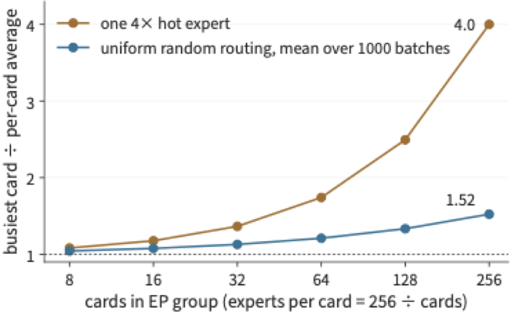
Communication volume also depends on which card a token originates on. In the TP2×EP4 layout from Section 9.1, each EP group processes the same batch of requests, and members of each EP group already hold identical hidden-state inputs, so cross-EP-group dispatch can be zero, with results merged via partial-sum reduction. Another layout has each card hold different input tokens, requiring activations to be dispatched to remote experts — Figure 9-16 depicts this case. When inputs are already replicated, communication concentrates in result merging; when inputs belong to different cards, execution adds one extra round of remote dispatch. Communication volume is jointly determined by where tokens originate, where experts are placed, and where results must end up.
Skew in large-scale EP must be examined across at least three levels. The selection frequency of logical experts determines each expert's effective row count; expert placement and replica selection turn these row counts into per-card load; the origin, destination, and network path of tokens then turn per-card load into traffic in each direction. Uneven expert popularity does not necessarily cause uneven cards, and even card-level computation does not necessarily mean uniform shared links. Section 6.3.2's within-batch reuse explained weight reading; this section continues to account for per-card computation, communication, and completion time.
Let \(a_{ij}\) be the number of token-expert dispatches from source \(i\) to expert group \(j\), with per-input and per-output payloads of \(d_D,d_C\) bytes respectively. Under a scheme that transmits per dispatch, without deduplication or pre-reduction,
Here \(R\) is the number of receiving expert groups, and \(\sum_jm_j=nk\). \(s_{\mathrm{expert}}=1\) means the effective workload is balanced across groups; it approximates compute skew only when experts share type and precision and padding is ignored. For communication stage \(X\in\{D,C\}\), tallying the matrix by sender, receiver, and physical cut set gives
Here \(V^X_{\mathcal C}\) and \(B_{\mathcal C}\) are, respectively, the payload crossing physical cut set \(\mathcal C\) and that link's bandwidth. This is a lower bound on payload transmission, excluding startup, queueing, and late-arriving data; concurrent traffic sharing the same physical direction must be summed, not each divided by a full bandwidth budget and assumed to complete simultaneously. Bandwidth skew here refers to uneven demand or occupancy across cards and links, not a change in the hardware's rated bandwidth.
Example 9.5: Same total communication volume — why does a hotspot slow down both exchanges? Following Section 7.2.3's 1024 tokens, 8 experts per token, and 8 KiB vectors, placed on the two HGX H100 servers of Figure 9-16: the four sources are the four cards on server A running attention, and the four expert groups each run on one card on server B, with all dispatches crossing servers. Each card sends and receives via its own 400 Gbit/s ConnectX-7 NIC, 50 GB/s per direction; the switching fabric between the two servers carries \(4\times50=200\) GB/s per direction. The four sources each send 2048 items, for a dispatch total of 64 MiB, and combine is also 64 MiB. In the balanced case each group receives 2048 items, i.e., 16 MiB; in the hotspot distribution \([5120,1024,1024,1024]\), group 0 receives 40 MiB and the other three groups each receive 8 MiB. Both distributions have the same total communication volume and total effective compute, yet expert skew moves from 1 to 2.5.
Each expert computation follows the Qwen3 MoE example's \(6\times4096\times1536\) FLOPs, with each H100's effective throughput taken as 494.7 TFLOP/s. Ignoring weight reading, padding, startup, and queueing for now gives the table below. The last column applies only to execution with a full-batch barrier between the three stages, being the sum of the three lower bounds; with overlap, the critical path must be computed separately.35
| Distribution and path | dispatch lower bound | busiest-card compute lower bound | combine lower bound | total staged-barrier lower bound |
|---|---|---|---|---|
| Four groups balanced, cross-server | 0.336 ms | 0.156 ms | 0.336 ms | 0.827 ms |
| Hotspot group, cross-server | 0.839 ms | 0.391 ms | 0.839 ms | 2.068 ms |
| Four groups balanced, only one 400 Gbit/s link between pools | 1.342 ms | 0.156 ms | 1.342 ms | 2.841 ms |
| Hotspot group, dispatch switched to FP8 | 0.419 ms | 0.391 ms | 0.839 ms | 1.649 ms |
| Hotspot group, both pools on the same HGX (NVLink) | 0.093 ms | 0.391 ms | 0.093 ms | 0.577 ms |
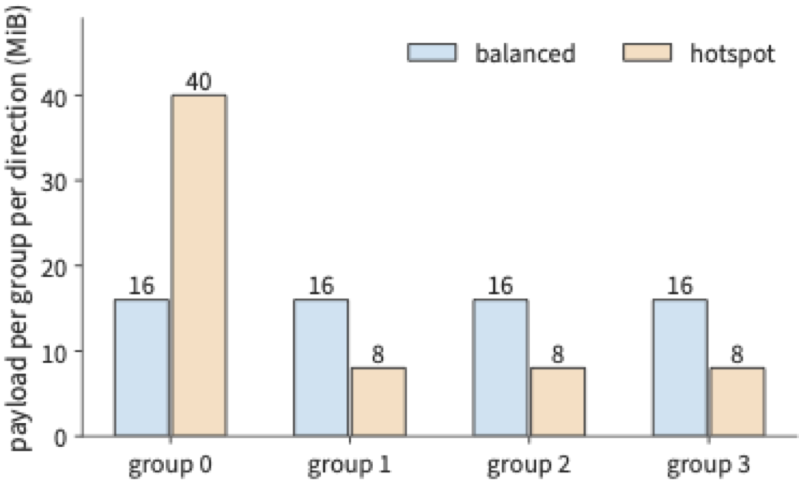
Across servers, the two exchanges account for 80% of the total staged-barrier lower bound, with the busiest card's compute contributing only 20%: an H100 takes about 76 ns to compute one expert task, while the NIC takes about 164 ns to transfer one 8 KiB activation. The hotspot simultaneously extends receiving, computing, and returning, stretching all three stages to 2.5 times their original duration. Spreading out the hotspot, if only one 400 Gbit/s link remains between the two pools, still requires at least 1.342 ms per direction — showing that adding expert cards cannot substitute for cross-pool bandwidth. Switching only dispatch to FP8 also does not proportionally shorten BF16 combine or expert computation; the table assumes quantization does not change compute time and ignores scale metadata, so as to observe each effect separately. Placing both pools within the same HGX, NVLink at 450 GB/s per direction compresses both exchanges to 0.093 ms, making the hotspot card's 0.391 ms compute the longest stage; here, reducing the hotspot card's compute is more effective than further raising bandwidth — which is exactly what the expert replicas in the next section address.
9.4.2 Expert Replicas, Placement, and Dynamic Adjustment¶
The work concentrated on a few cards in Figure 9-20 points to an improvement: place replicas of hotspot experts on idle cards, so those cards can also handle hotspot tasks. Expert replication lets a single logical expert have multiple physical copies, and the scheduler can distribute tasks among these copies. As long as the replicas' weights match, routing weights are applied correctly, and results are merged properly, replication need not change the rule that each token selects the top-k highest-scoring experts (top-k); modifying the expert-selection rule changes model behavior and must be evaluated separately. vLLM and SGLang's expert parallelism load balancer (EPLB) adjusts each logical expert's replica placement and task assignment based on routing statistics.
Expert replicas consume GPU memory, and they also crowd out KV cache and buffers. Adding one 36 MiB expert per card per layer, across 94 layers, requires 3384 MiB total, about 3.30 GiB; adding a replica only for the eight most congested layers requires just 288 MiB. The two differ by nearly a factor of 12. CRAFT is a serving system studying expert replicas and memory allocation, addressing exactly this question of how to allocate memory across layers: spending space on the layers where it most shortens waiting, rather than mechanically giving every layer the same number of replicas.13
Example 9.6: How many batches does a hotspot expert replica need to recoup its replication cost? Eight cards form one HGX H100 server; a batch of 128 tokens all select the same eight hotspot experts on card 0, totaling 1024 dispatches. Replicate seven of these experts, one copy each, onto cards 1 through 7, totaling 252 MiB; each of the seven receiving cards gains 36 MiB, which fits within the 64 MiB of extra available space. At 50% of peak, each H100 has effective throughput 494.7 TFLOP/s and memory bandwidth 1675 GB/s. Card 0, scheduled by tile, must read and write about 921 MB per batch, memory-bandwidth-bound; after replication, card 0 handles only 576 dispatches, and its per-batch time shortens from about 0.550 ms to 0.309 ms, saving about 0.240 ms. All seven copies are sent sequentially from card 0 via NVLink (450 GB/s per direction), each with an additional 5 μs startup, taking about 0.622 ms to replicate. Using unrounded execution times, the minimum number of batches at which cumulative savings exceed the replication time satisfies
Within the same server, the replica pays for itself by the 3rd batch: a hotspot lasting 16 batches nets about 3.2 ms saved, and one lasting 64 batches nets about 14.8 ms. If the hotspot expert's original copy sits on a different server, replication must cross a 400 Gbit/s ConnectX-7 NIC (50 GB/s per direction), extending preparation time to about 5.32 ms and requiring 23 batches to break even: a hotspot lasting only 16 batches actually nets a loss of about 1.5 ms, while one lasting 64 batches nets about 10.1 ms saved. Figure 9-24 plots this one-time investment against per-batch return on the same chart. If the receiving card has only 32 MiB of space, unable to hold even one 36 MiB expert, then regardless of how long the hotspot persists, placement must be changed or capacity freed first.14
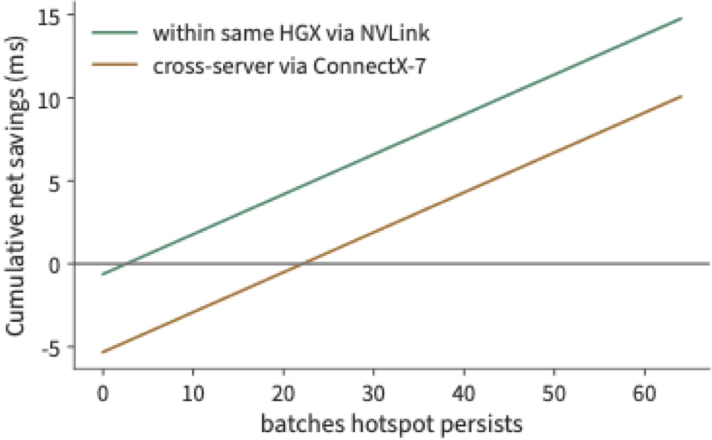
CRAFT's measurements further show that replication benefit depends on the layer. This study, based on SGLang v0.4.8, ran BF16 DeepSeek-R1 and Kimi K2 on an A100 80GB cluster of eight AWS p4de.24xlarge nodes, comparing per-layer memory-budgeted expert replica allocation against existing replication strategies. The paper reports end-to-end throughput averaging 1.14x that of the baseline, up to 1.2x at best. This suggests replica budgets should go preferentially to high-benefit layers, but it does not mean any arbitrary hotspot replication achieves this gain; its experimental conditions — inputs chunked at 4096 tokens, outputs fixed at 256 tokens — and its goodput-defined capacity inflection points cannot directly substitute for online p99 metrics.37
A replication strategy must predict how long a hotspot will persist. For cross-server replication, each re-replication costs 5.32 ms, so frequently migrating replicas to chase hotspots delays recouping the replication cost. Replication within the same server takes only 0.622 ms, barely a constraint on time; what limits the number of replicas is how much memory each card can free up. Priority capacity should go to persistently congested layers, so that cumulative saved waiting time exceeds preparation cost.
A balancing strategy must also choose its control points along the full path. On the source side, it must balance token counts against attention readiness time; on the expert side, it must balance effective row counts, actual GEMM time, and receive volume; on the network side, it must check shared egress, cross-rack traffic, and the return direction. This is exactly why DeepSeek's public reports handle prefill, decode, and EP load balancing separately. In long-context decode, even with the same number of requests per card, attention's KV read volume can still differ, ultimately producing different dispatch initiation times.34
In independent expert pools, cross-source queueing must also be controlled. Multiple attention workers may simultaneously select the same hotspot expert, and even if each worker's own small batch looks balanced, the combined traffic can exceed that expert's service capacity. If a pool admits \(\lambda\) batches per second, and each batch on average generates \(\mathbb E[F_j]\) FLOPs on expert card \(j\), stable operation requires at least \(\lambda\mathbb E[F_j]<C_j\); each link \(\ell\) must also satisfy \(\lambda\mathbb E[V_\ell]<B_\ell\). Satisfying these conditions on average is only a necessary condition — bursty and heavy-tailed input can still create long queues. A shared pool sometimes aggregates batches and smooths out fluctuations across sources, but sometimes amplifies correlated hotspots; separation cannot be assumed to eliminate skew.
Hotspot replicas should go where both compute headroom and link bandwidth headroom exist simultaneously. This section's dispatch message is a single token's hidden-state vector — 8 KiB in BF16, 4 KiB in FP8 — far larger than the roughly 0.93 KB crossover point derived in Section 7.2.4 for a 50 GB/s NIC, so the hotspot card exhausts bandwidth first, not the NIC's request-issue rate. Only when sending control messages under 1 KB each does headroom need to be reserved for the NIC's roughly 54 million requests-per-second issue capability. Dynamic replica selection must account for queues and paths, and must retain the current batch's routing map until combine completes; before migrating or reclaiming an old replica, in-flight tasks must be drained. Setting admission quotas for hotspots and capping in-flight volume from a single source can prevent it from exhausting an entire pool's buffer; when increasing pool capacity, admission quotas and backpressure must be adjusted accordingly. Dropping overflow tokens, changing top-k, or substituting logical experts changes model behavior and cannot be treated as transparent resource balancing.
9.4.3 Overlapping Input Dispatch, Computation, and Result Merging¶
The accounting in the previous two subsections did not distinguish prefill from decode, yet concentrated dispatch affects these two stages differently. Demystifying the Mixture of Experts Serving Tax explains this difference using per-stage microbenchmarks: prefill's uneven compute lets the slowest card hold back the whole batch, while decode's concentrated experts can actually reduce memory-access cost by shrinking active weights and padding. This aligns with the reuse analysis in Section 6.3.2. The paper's Mixtral/Qwen2 MoE experiments use eight A100s, DeepSeek-V3 uses eight B200s, and the communication microbenchmarks separately use 8/16 H200s; these results cannot be combined into a single cross-cluster end-to-end speedup. The paper's evidence shows that routing, actual matrix shapes, communication, and memory access must be measured together.37
The impact of actual matrix shapes comes mainly from padding. Grouped GEMM places multiple experts' matrix multiplications into a single kernel launch, and the kernel pads each matrix's row count to the tile size. For example, eight local experts receive \([32,16,8,4,2,1,1,0]\) tokens, totaling 64 token-to-expert dispatches, corresponding to 64 valid rows in the input matrix. If each non-empty expert is padded to 32 rows, 224 rows are needed; if all eight experts are padded to the maximum value, 256 rows are needed. The rows actually executed are 3.5 times and 4 times the valid row count, respectively. This explains why matrix time can still differ even with the same effective task count: the hardware executes the padded matrix, while the expert computation the model actually needs corresponds to only those 64 valid rows — the padded zero rows have no corresponding real tokens.
Padding affects only the compute term; the total duration across the three stages also depends on whether they can overlap. Take Section 9.4.1's cross-server balanced distribution as an example: the lower bounds for dispatch, expert computation, and combine are 0.336, 0.156, and 0.336 ms respectively, fully serial totaling 0.827 ms. If evenly split into two micro-batches, each stage's time halves, and the ideal three-stage pipeline equals the sum of one micro-batch's three stages plus one more instance of the longest stage — i.e., 0.581 ms, saving 0.246 ms. Here the longest stage is communication, so the NIC sets the pipeline's pace. If the NIC's DMA contends with concurrently running GEMM for HBM access, slowing each micro-batch's dispatch and combine by about 49% each, the same pipeline reverts to 0.827 ms: communication did overlap, yet the batch is no faster. Conversely, expert computation would have to slow to 3.1 times its original duration to cancel out the same gain.15
Padding and contention are precisely the two main sources of MFU falling short of peak: padding makes the matrix unit compute zero rows with no corresponding tokens, and contention makes communication and computation drag each other down. Both arise at the implementation level — hardware peak has not changed; choosing a tile size that better fits actual row counts, and staggering DMA and GEMM access to HBM, can recover part of this loss.
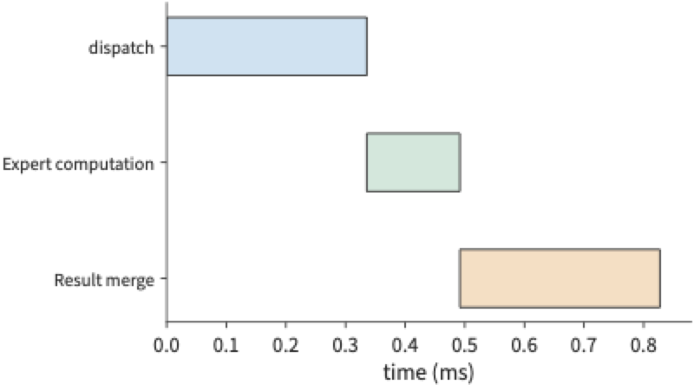
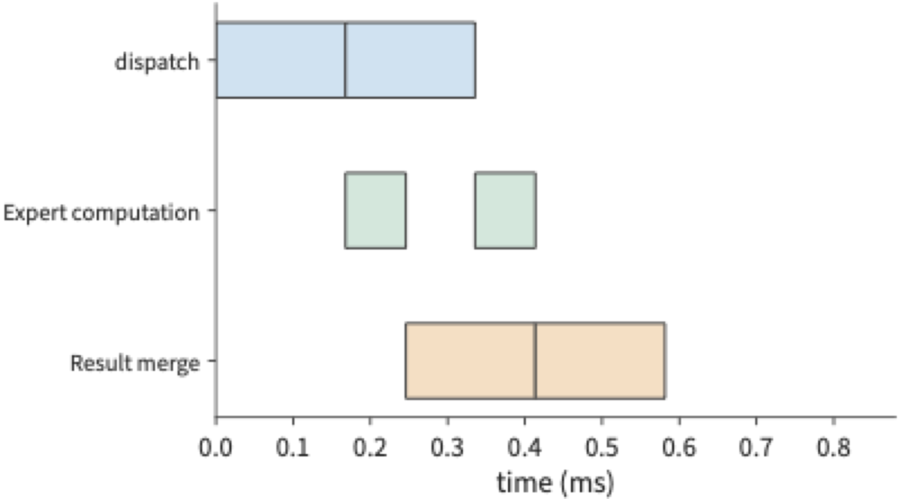
Following the timeline in Figure 9-26, while the first micro-batch is in combine, the second micro-batch has already begun computing. The first batch's dispatch fills the pipeline, and the last batch's combine wraps it up — these two segments are the serial time outside the pipeline proper.
The pipeline above assumes the two micro-batches are evenly sized. In real expert separation, a single token's path is still "dispatch → selected experts' computation → combine," with two communication stages sandwiching expert computation. Dispatch's data-readiness skew comes from attention's completion time and the send queue; the skew from expert computation, in turn, becomes combine's send-readiness skew. Even when the byte counts of the two exchanges are perfectly symmetric, the return stage can still be lengthened by late-arriving data.
For token \(t\), let the set of selected experts be \(\mathcal E(t)\), and let \(L_{t,e}\) denote the cumulative path length — queueing, dispatch, computation, and return — from the start of the current layer to expert \(e\). Its merge completion time satisfies
Every path here includes queueing on shared resources, so the individually measured per-stage times cannot simply be substituted in and assumed independent. If one token's two branches return at 0.5 ms and 1.4 ms respectively, it cannot merge until after 1.4 ms; shortening only the fast branch to 0.3 ms does not change its completion time. When advancing per-token or per-chunk, tokens that did not select a slow expert can proceed sooner; a full-batch barrier makes them all wait together. Whether the runtime truly supports fine-grained advancement, and whether subsequent matrices still require batch assembly, determines how far the wait propagates.
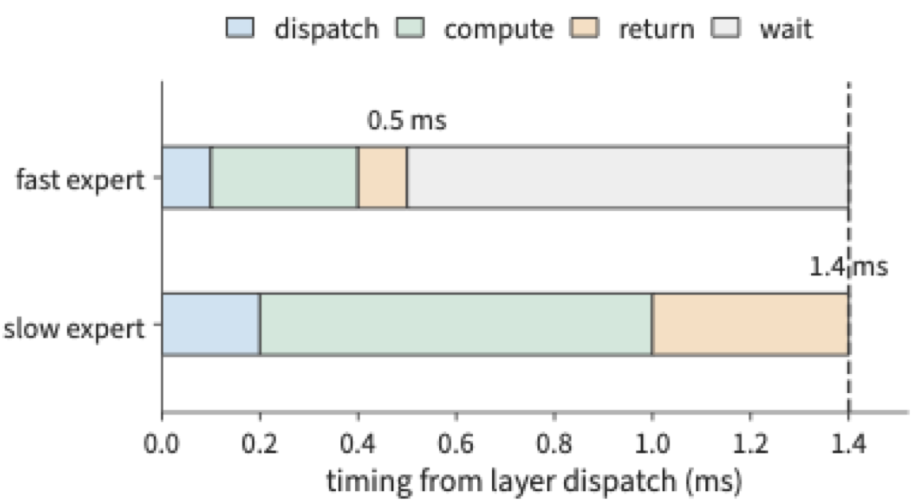
This also explains why \(\max(t_A,t_F)\) cannot always predict an expert pool's pipeline period. That formula requires each stage's duration to be stable, resources to be independent, and work to be continuously supplied; the actual period is also constrained by the busiest expert, round-trip links, return buffers, and cross-layer dependencies. If the same expert pool serves multiple layers or multiple models, their resource consumption must be tallied together. Even the first micro-batch must bear the full round-trip latency — raising steady-state throughput does not shorten a single token's response time.
The two communication rounds — dispatch and combine — are implemented by communication libraries. NCCL provides general-purpose collective and point-to-point primitives, while dedicated EP communication libraries combine routing, packing, transfer, and merging into a single implementation. DeepEP provides MoE dispatch/combine with low-precision transfer support; V2's public interface uses ElasticBuffer, with an underlying NCCL Gin backend (NCCL with GPU-initiated network communication), and removes the V1 low-latency EP communication path that bypassed the SM and sent/received directly over RDMA. This shows that even a matching library name cannot be compared without specifying the version. When comparing implementations, fix the version, data shape, precision, and topology, and separately record send/receive byte counts, expert GEMM row counts, padding, per-stage readiness and completion events, then tally p50/p99 across the whole layer and the whole request. Communication bandwidth measured in isolation explains only part of this.34
When reproducing this section's calculations, first keep the total dispatch count fixed and vary only the expert distribution; then fix the distribution and vary the shared egress and dispatch precision; finally, vary one source's or one expert's readiness time within the trace log. The first three can be directly reproduced with the accompanying calculations; the last requires observing, within the execution timeline, how the waiting propagates. Only this way can one distinguish traffic skew, compute skew, and pure late-arrival waiting, rather than attributing every slow communication to insufficient network bandwidth.35
9.5 KV Distribution, Sharing, and Request Routing¶
9.5.1 Cache Identifiers, Sharing Scope, and Available State¶
The previous two sections reduced the latency of the current request by changing the execution location and task assignment. Another way to save computation is to let subsequent requests directly use the KV left by a previous computation. Section 8.3 already explained the mechanisms of paging, prefix matching, sharing, and eviction. This section considers how, when state is distributed across different execution locations, to confirm a match, find the data, and complete the transfer. The value of prefix caching comes from avoiding repeated execution, but "identical text" is not enough to uniquely determine all reusable state. The model and adapter version, token sequence, position indices, state format, and any necessary encoding configuration may all participate in computing the cache identifier. For example, the same tokens paired with different adapters project to different K, V; the same suffix following different preceding text sees a different context under attention. The cache key needs to identify, along the prefix chain, the entire computation that produced this state. Sliding-window state or recurrent state must also carry the corresponding token position indices and update timestamps in order to continue from the same state.
Once we confirm that two states can substitute for each other, we still need to determine where the state is stored and how other instances read it. Adding up capacities does not automatically form a shared cache. When two instances each have 4 GiB of private host-memory cache, the same 1.125 GiB prefix is stored separately on each side, occupying 2.25 GiB in total, and neither instance can use the other's copy. If both are connected to the same shared storage backend (a storage service that receives and serves cache objects), one object can serve both sides, but each side may still need to fetch it locally before generation. SGLang's tiered cache HiCache, vLLM's multi-level cache path, and the KV cache management system LMCache offer different organizations; whether the fetch passes through the CPU determines the path time discussed in the next section.16
Once state is produced, it must be saved and published before other instances can query, fetch, and use it. The cache events used by the router typically carry only metadata such as storage location and cache identifier, not the full KV. When the copy on the GPU is evicted, the copy on the CPU may still remain. The directory holds the mapping from cache identifier to location; the object holds the actual KV bytes. Recovery must confirm both the directory mapping and the object data separately. Missed or delayed events, or cache space being released, can all make a previously recorded location no longer valid.
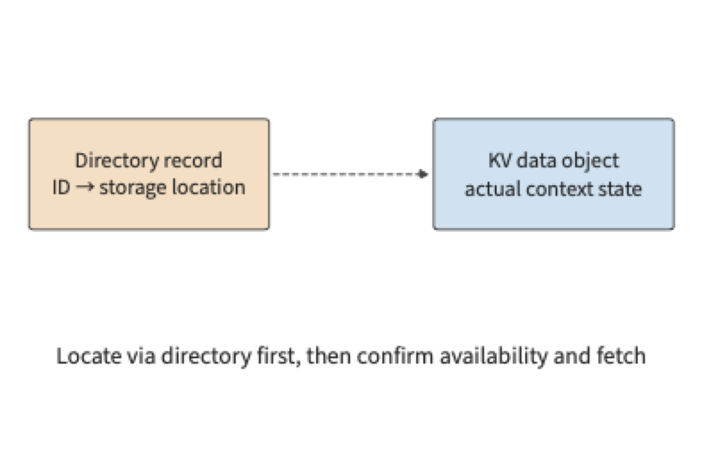
9.5.2 Multi-Level Storage¶
Section 8.3.4 compared retention, swap-out, and recomputation on a single card. Scaling up to an entire server, the same KV can be stored in four locations: HBM, host memory, local SSD, and a remote storage pool — capacity increases and distance from the GPU grows as we move down this list. Take a DGX A100 as an example: 8 A100 80GB cards, 2 TB host memory, 8 3.84 TB U.2 NVMe SSDs, 8 200 Gbit/s NICs, computed as the share per GPU. The SSD chosen is a Solidigm D7-P5520 3.84 TB, with peak sequential read and write bandwidth of 7.1 GB/s and 4.2 GB/s respectively. The stored object is still the 8192-token prefix of Qwen3-8B, totaling 1.125 GiB.17
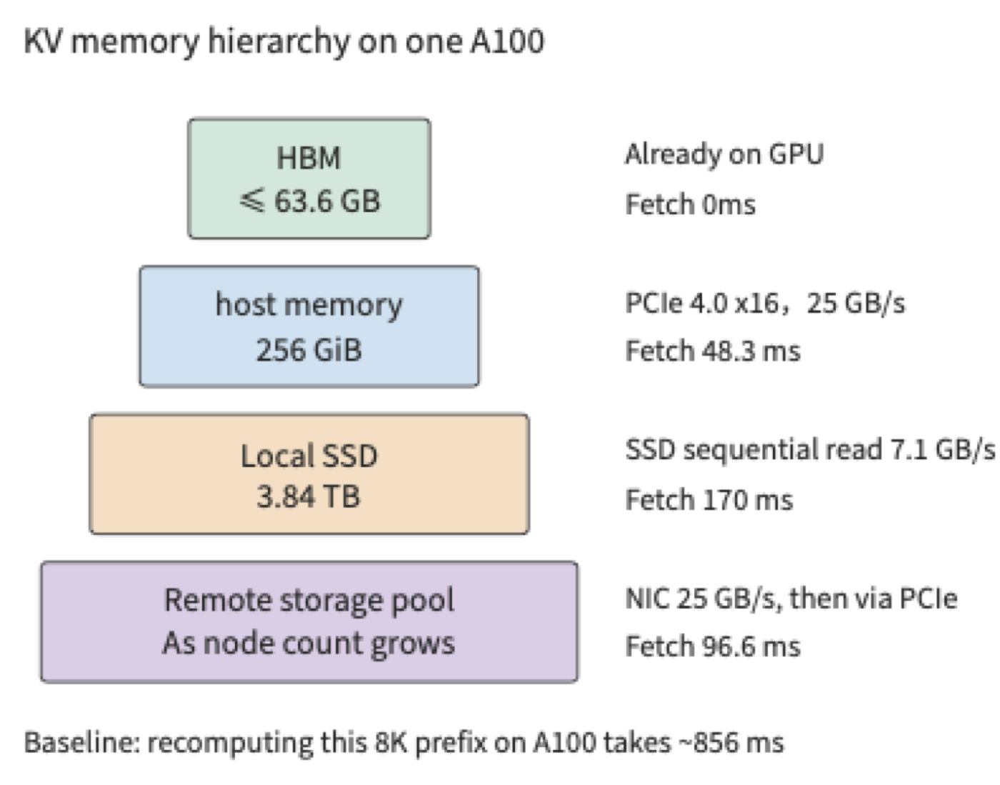
| Tier | Capacity per GPU | Path to GPU | Fetch 8K prefix |
|---|---|---|---|
| HBM | ≤ 63.6 GB | already on GPU | 0 |
| Host memory | 256 GiB | PCIe 4.0 x16, 25 GB/s | 48.3 ms |
| Local SSD | 3.84 TB | SSD sequential read, 7.1 GB/s | 170 ms |
| Remote storage pool | grows with node count | NIC 25 GB/s, then PCIe | 96.6 ms |
| Reference: recompute on A100 | — | at 50% of peak | 856 ms |
The HBM row is the upper bound after subtracting the 16.4 GB of BF16 weights from 80 GB, before deducting activations and workspace. The fetch time for all four tiers is far below the 856 ms recompute time, so for a single fetch, storing state at any tier is faster than recomputing. The real constraints come from three other factors: whether the cache survives until the next use, whether reading can overlap with computation, and how much it costs to write to each tier.
Capacity determines how long the cache can retain state. One A100 continuously running prefill on non-hit 8K requests produces one 1.125 GiB KV every 0.856 s, a production rate of \(r\approx1.41\) GB/s. If all newly produced KV is written to a given tier and evicted in write order, a tier of capacity \(C\) can hold roughly the KV produced in the most recent \(C/r\) seconds: about 45 s for HBM, about 195 s for host memory, about 2722 s (45 minutes) for SSD. Conversely, let \(T\) be the interval between two uses of the same prefix; for requests arriving again within interval \(T\) to hit, this tier's capacity must satisfy at least
A study by Alibaba Cloud based on online request logs (traces) reports reuse intervals for two types of workloads: for conversational workloads facing individual users, 80% of reuse occurs within 10 minutes; for enterprise API workloads, 80% of reuse occurs within 10 seconds. At a 10-second interval, only 14.1 GB is needed, which HBM can accommodate; at a 10-minute interval, 846 GB is needed, exceeding the 275 GB of host memory per card, requiring SSD to cover the gap.18
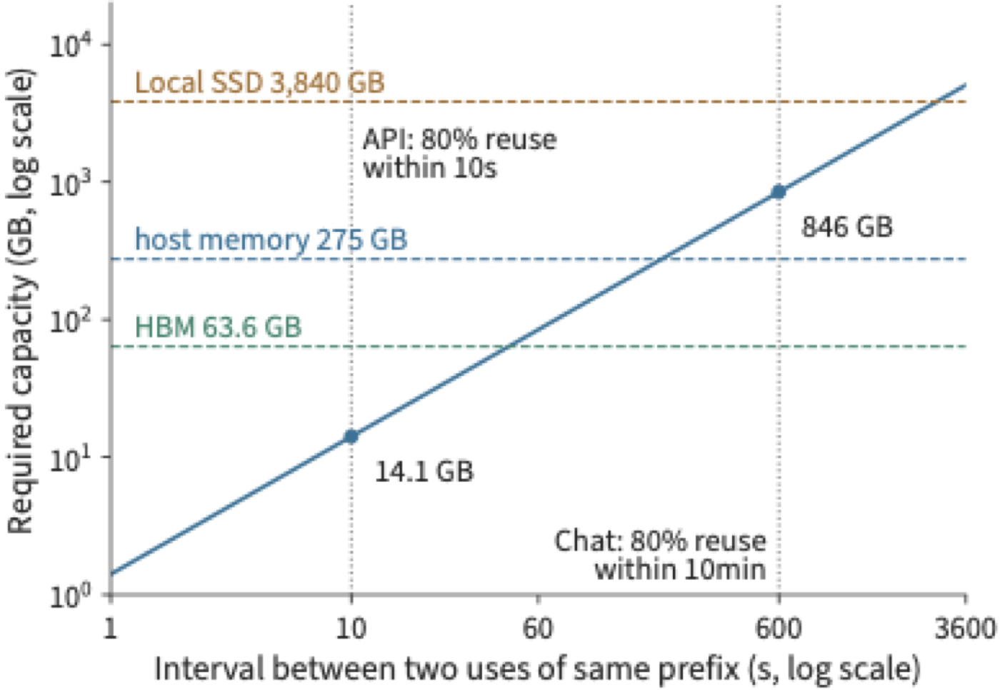
\(C\ge rT\) also explains when SSD is unnecessary. The same study found that on its conversational workload, the cache capacity Llama3-70B requires is about 4 times available HBM; with an 8-card A100 server equipped with 1 TB of host memory, each card gets 128 GB, which is already sufficient, with no need to add SSD or a remote tier. The difference lies in r: that study computed \(r\) from the actual request rate per instance, and requests were also shorter — single-turn requests averaged 973 tokens, multi-turn requests averaged 5953 tokens; here we instead assume the GPU is continuously running prefill on 8K requests. The higher the prefix hit rate and the smaller the KV per token (e.g., with MLA), the lower \(r\) becomes. \(T\) depends on who initiates the next round: human conversation intervals are measured in minutes, programmatic call intervals in seconds.
The larger the capacity, the more slowly hit rate improves. Capacity can only retain state that will be reused in the future, and some state will never be used again. Mooncake released a one-hour sampled trace of Kimi's online service, with each block holding 512 tokens. Under LRU eviction (evicting the least recently accessed block first), as the cache grows from 1000 blocks to 50,000 blocks, hit rate rises from 30% to 50%; even with unlimited capacity, it only reaches 51%. Converted to Qwen3-8B, 50,000 blocks is about 3.77 TB, comparable to one 3.84 TB SSD. In this trace, over half the blocks were never reused, while others were accessed tens of thousands of times; Alibaba Cloud's trace shows similar concentration, with 10% of blocks contributing 77% of reuse.19
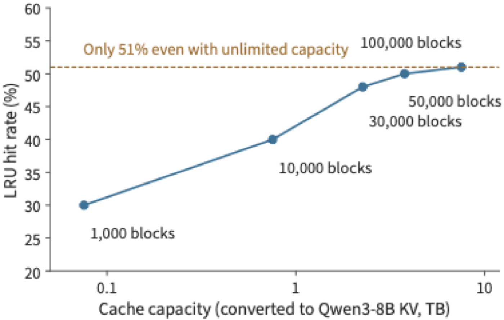
Fetch once, or read remotely at every step. Shared KV has three typical usage patterns: re-run prefill locally, fetch once from a remote location and retain locally, or read from the remote location at every decode step. All three use the same context, but with completely different transfer frequencies.
Continuing with the 1.125 GiB prefix and this chapter's 200 Gbit/s NIC (25 GB/s), one payload fetch takes about 48.3 ms. If 100 decode calls each re-fetch this unchanged prefix from the remote location, the link is occupied for a cumulative total of about 4.83 s. If these 100 reads must complete within one second, this context alone requires about 121 GB/s, 4.8 times the given link's capacity. Even scheduling reads in parallel with computation cannot make a 25 GB/s link transfer these bytes within one second. Switching to the compact 549 MiB MLA prefix, one fetch takes about 23.0 ms, and 100 fetches cumulate to about 2.30 s; completing within one second still requires about 57.6 GB/s, 2.3 times the link's capacity — halving the state size only halves the multiple, and reading from the remote location at every step remains infeasible.
Fetching once and retaining locally reduces transfer frequency from "once per step" to "once per reuse," at the cost of occupying local HBM. Let a state occupy \(V\) bytes and be retained locally for \(\tau\) seconds; the product of capacity and time occupied is \(V\tau\), in units of byte-seconds. Holding the state for the same 10 seconds, a larger object occupies more; for objects of the same size, the longer the retention, the larger this product. In the session from Section 9.1.3, during the 10-second tool execution, GQA state occupies 11.25 GiB·s, while the compact MLA state occupies 5.36 GiB·s — the same local capacity can hold about twice as many waiting sessions. Inactive sessions can therefore be offloaded to a remote location, fetched back when the session resumes, and kept local during continuous decode. This way, data transfer mainly occurs at session resumption and pause.
Assume a state will be reused \(k\) times in the future, temporarily ignoring queueing time and the displacement of other cached content caused by occupying this space. The condition under which saving and later fetching is faster than recomputation is
Take Qwen3-8B's 8192-token prefix as an example: recomputing it once on an A100 takes about 0.856 seconds (the prefill time from Section 9.2.3); saving and fetching each take about 48.3 ms over a 25 GB/s NIC. For a single reuse, saving plus fetching totals about 96.6 ms, less than an eighth of recomputation — as long as this state will be used again just once more, saving is worthwhile. The conclusion changes as the link slows: at bandwidths between about 1.41 and 2.82 GB/s, at least two reuses are needed to offset the cost of saving, and the closer to 1.41 GB/s, the more reuses required; below about 1.41 GB/s, even a single fetch is slower than recomputation, and the more reuses, the greater the loss. A 10 GbE link offers only 1.25 GB/s per direction, so a single fetch takes about 966 ms; in this case, recomputation should be used, or the fetch should be moved off the critical path and completed in advance. State size enters only \(T_{write}\) and \(T_{read}\); \(T_{recompute}\) is determined by the model's prefill cost. Switching to compact MLA state, writing and fetching once over the same NIC takes only about 46.1 ms, shrinking the left side of the inequality as KV byte count decreases.
This critical bandwidth of 1.41 GB/s is exactly the KV production rate \(r\) from above: fetching \(V\) bytes takes \(V/B\), recomputing takes \(V/r\); as long as the link bandwidth \(B\) exceeds the rate at which the GPU produces this KV, fetching is faster than recomputation. Local SSD's write and read bandwidth both exceed \(r\): writing takes about 288 ms, reading about 170 ms, and a single reuse totals about 458 ms, still less than the 856 ms of recomputation.
Overlapping reads with computation. After a hit, the request only needs to compute 256 new tokens, which at 50% of A100 peak (per Section 9.2.3's convention) takes about 30.9 ms. When historical KV is in host memory, if the entire block is read in before computation begins, the total is 48.3 + 30.9 = 79.2 ms, with reading taking longer than computation. CachedAttention adopts layer-by-layer preloading: since a Transformer computes layer by layer, and layer \(i\) only uses layer \(i\)'s KV, the GPU can compute layer \(i\) while PCIe simultaneously reads subsequent layers. Qwen3-8B's historical KV per layer is 32 MiB, taking 1.34 ms to read, while computing one layer for the new token takes only 0.857 ms. Since each layer's computation must wait for its read, the total time is about 49.2 ms, still dominated by reading. To shorten this further, some layers must be read in before this request begins executing: using the previous batch's execution time, the first 14 layers (448 MiB) are read into a buffer reserved in HBM, and the reading of the remaining 22 layers can be fully overlapped with computation, reducing total time to the 30.9 ms of computation alone. The buffer must hold exactly the extra bytes by which reading exceeds computation:
where \(B\) is link bandwidth, \(T_{read}\) is the time to read all historical KV, and \(T_{new}\) is the time to compute the new tokens. Substituting 25 GB/s, 48.3 ms, and 30.9 ms gives about 437 MB, slightly more than 13 layers, rounded up to a whole 14 layers. When \(T_{new}\ge T_{read}\), no buffer is needed: with about 400 new tokens, computation can already overlap the read from host memory; the remote storage pool's serial path needs about 800, and local SSD needs about 1400. In CachedAttention's measurements on LLaMA-13B, with 1K historical tokens and 100 new tokens, layer-by-layer preloading reduced prefill time by 35%, and adding a 15-layer buffer reduced it by 61%.20
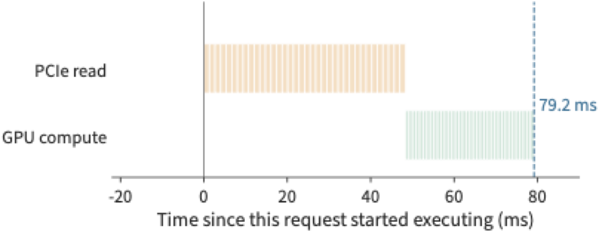
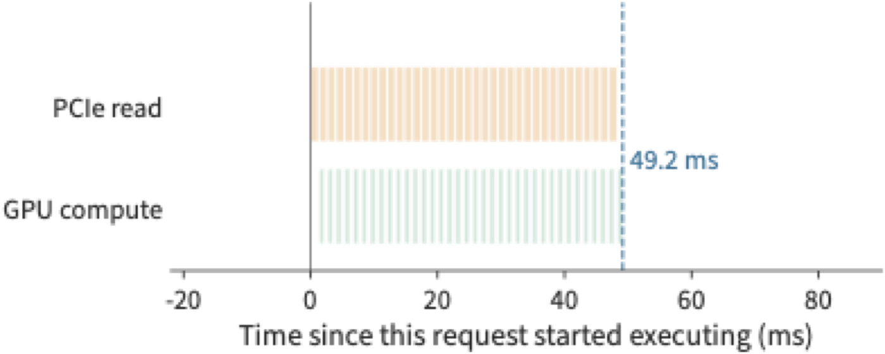
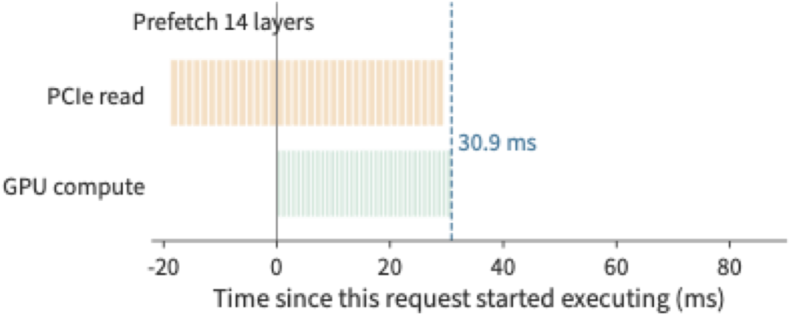
Using queueing time to prefetch from SSD. Reading one layer from local SSD takes 4.73 ms, 5.5 times the time to compute one layer, so layer-by-layer preloading can overlap only a small fraction. When a request begins executing, if its state is still on SSD, even with layer-by-layer reading, this step alone takes about 171 ms, while computation itself only takes 30.9 ms. Queueing time can be exploited: while a request is still in the queue, the scheduler already knows which prefix it needs and can read this prefix from SSD into host memory in advance. As long as the queueing time is no shorter than 170 ms, this read is off the critical path, and layer-by-layer reading from host memory proceeds as described above once execution begins. This is the same relationship as \(T_{first}=\max(Q,R)+C\) from Section 9.5.4: prefetching overlaps the state-ready time \(R\) with queueing time \(Q\).
How many sessions host memory can hold determines how many of the requests at the front of the queue the scheduler can prefetch for: 256 GiB can hold about 227 8K prefixes, so prefetching need only cover the 227 requests at the front of the queue. When host memory is insufficient and swap-out is needed, decisions are also made based on the queue: state that requests are about to use cannot be swapped out; among the rest, the state whose next use is furthest away is swapped out first. LRU and FIFO rely only on past access and cannot exploit upcoming requests in the queue. CachedAttention replays multi-turn conversations from ShareGPT (a dataset of user-shared ChatGPT conversations) on 4 A100s, 128 GB of host memory, and 10 TB of SSD: with queue-based prefetching and eviction, overall hit rate is 86%, with over 99.6% of hits coming from host memory; LRU and FIFO achieve hit rates of only 58% and 48% respectively, with less than 1% of hits coming from host memory — almost every hit requires reading from SSD.20
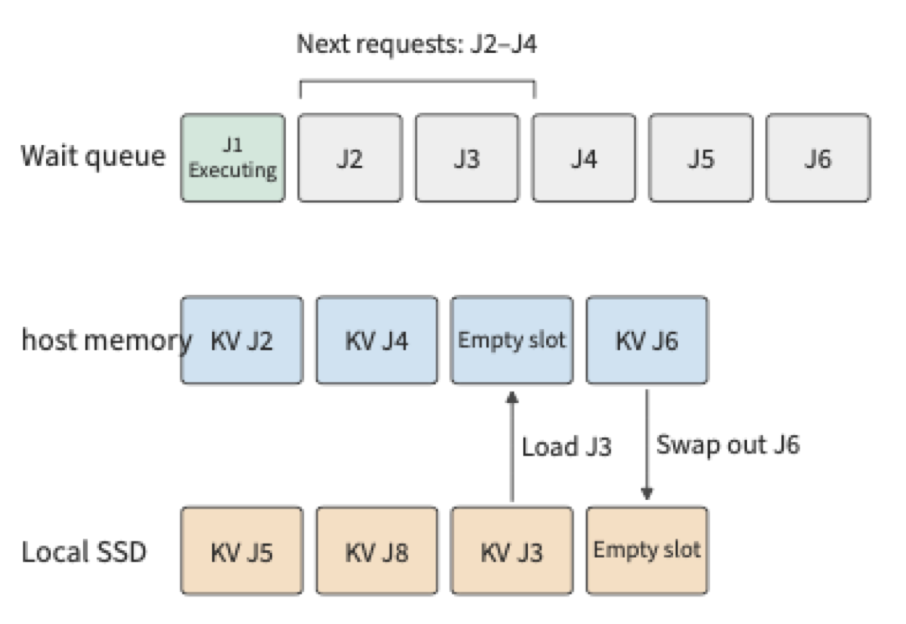
SSD write endurance is limited. Writing must also avoid the critical path. The KV produced layer by layer during prefill can be written back concurrently with computation; decode appends only one token's KV per step. Writing at \(r\approx1.41\) GB/s occupies only 5.6% of PCIe bandwidth, and only 34% of SSD sequential write bandwidth. SSD's real constraint is write endurance: the D7-P5520 is rated for one full drive write per day over five years (1 DWPD), so the 3.84 TB drive can sustain only about 44.4 MB/s on average. If all new KV were written to SSD, the write volume would be 31.7 times this quota, exhausting the five-year write endurance in under two months. Over the long run, only about 3.2% of new KV can be written to SSD. As with the two traces mentioned earlier, reuse concentrates on a small number of blocks — in the Mooncake trace, more than half the blocks were never reused — so writes to SSD need admission control beforehand, for example writing only prefixes that have already been reused, or sessions with multiple turns that have not yet ended. Writing under this quota, the SSD can hold roughly the KV produced in the most recent day.
This relationship between capacity and hit rate can also be observed experimentally. In a set of experiments with two engines sharing a single card, across 12 opportunities for prefix reuse, a 4 GiB shared CPU pool achieved 5 complete hits, while an 8 GiB pool achieved 12 complete hits. The extra 4 GiB retained seven complete prefixes that would otherwise have been evicted; if the state a subsequent request needs is already local, it need not be fetched again. So the benefit of shared capacity must be weighed by "how long it's retained, how many recomputations avoided, and how many extra transfers incurred."21
9.5.3 Persistence, checkpoints, and Partial Recomputation¶
The previous section assumed that saved state can be fetched back completely. After an instance restarts, directory records, disk data, and continuously reusable prefixes may not be consistent, and the recovery process needs to re-confirm which computation results have actually been saved. Persistence keeps state available after an instance restarts or a task pauses. Full saves reduce recomputation on recovery, periodic checkpoints reduce writes but increase recovery work, and partial recomputation uses the retained prefix to fill in the missing part. A checkpoint must save all the state needed to continue computation: full GQA saves the context K, V; DeepSeek V4's state also involves compression results, windows, and unfinished compression blocks. Recovery continues computation from the last complete update recorded in the checkpoint.22
Persisted state is saved by page and read back by page on recovery. Consider full GQA pages first. For Qwen3-8B, each logical page holding 16 tokens is 2.25 MiB. If the K, V shards of each layer are moved separately, many small contiguous segments result; if gathered by page, both the number of transfers and the required layout transformation differ. One logical page split by K, V across 36 layers has 72 32 KiB contiguous segments; gathered by page, it is a single 2.25 MiB object. The former is more limited by operations-per-second constraints, while the latter spends more time transferring contiguous payloads.
A request after restart reads 64 pages, covering 1024 tokens, but the reusable contiguous prefix is only 1008 tokens, i.e., 63 pages. The extra page read costs 2.25 MiB without saving any corresponding recomputation. For this request, the read volume is 144 MiB, but the effective reuse is about 142 MiB; a more informative way to put it is "64 pages read, 63 used." The constraint here occurs after the read: only pages that match successfully and can be continuously appended to the existing context can substitute for computation. Reading the disk faster shortens the read time but does not change the final page this request must process.23
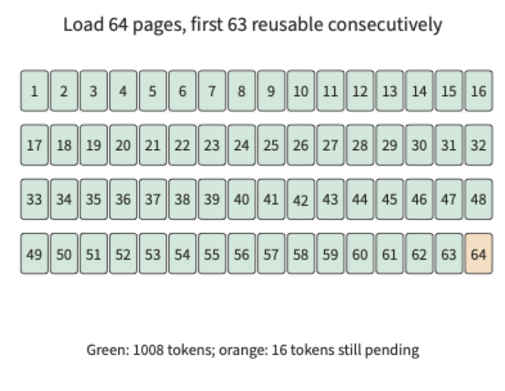
When a page is missing, we must compare how long continued waiting takes against recomputation. Recomputing an entire 8192-token prefix on an A100 takes about 0.856 seconds (the prefill time from Section 9.2.3); if a request has already waited 1 second to fetch an unavailable object, that wait alone already exceeds the time for a full recompute. In an actual truncated-page experiment, a request that waited unconditionally never completed within a 60-second observation window; once allowed to give up waiting, the request obtained its result via recomputation. After completing the current request, the bad page still needs to be isolated or repaired, or the next request will encounter the same wait.24
9.5.4 Cache Affinity and Request Routing¶
Once we confirm the cache is reusable, we still need to decide which machine to send the request to. The machine holding the cache may be busy, while another machine, though needing to fetch or recompute, might finish sooner. So what matters for routing is the request's completion time. Let \(Q\) be the earliest time the GPU can execute, \(R\) be the time at which state becomes ready starting from request arrival, and \(C\) be the remaining work once the state is available. In a model where execution begins only after the entire state has arrived, and where fetching can overlap with GPU waiting, the time to first token is
If the fetch can only begin after the GPU finishes its queue, queueing time and fetch time must be added together; if layer-by-layer pipelining is used, a finer execution graph is needed. For example, with \(Q=80\) ms, a fetch taking 60 ms, and remaining computation of 10 ms, parallel readiness needs 90 ms in total; waiting for the GPU to become idle before starting the fetch needs 150 ms. The amount of computation and the number of bytes transferred are identical — only the dependency relationship differs, yet the time differs by 60 ms.
Example 9.7 How do cache hits and queueing delay jointly determine request routing? A and B are two A100 instances, and the request carries an 8192-token prefix plus 256 new tokens. A has this prefix in HBM, but must queue for 250 ms; B only waits 20 ms, but has no cache. At 50% of A100 peak (per Section 9.2.3's convention), i.e., 156 TFLOP/s: fully recomputing 8448 tokens requires about 138.4 TFLOPs of matrix operations, about 887 ms; after a hit, only the 256 new tokens are computed, about 4.81 TFLOPs, 30.9 ms. B could also fetch the prefix from remote storage: a fixed lookup cost of 10 ms, then the full 1.125 GiB crosses the network to host memory and then PCIe 4.0 x16 to the GPU, computed at 25 GB/s as in Example 9.3, about 48.3 ms.
| Path | Time to first token |
|---|---|
| A: local hit | \(250+30.9\approx281\) ms |
| B: direct recompute | \(20+887\approx907\) ms |
| B: remote fetch via 50 GbE (6.25 GB/s) | about 282 ms |
| B: remote fetch via 200 GbE (25 GB/s) | about 137 ms |
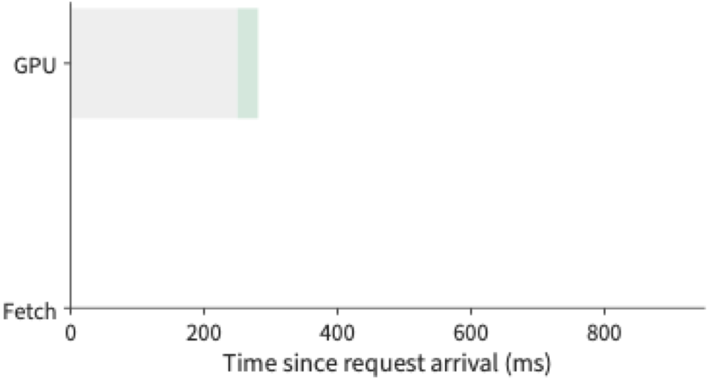
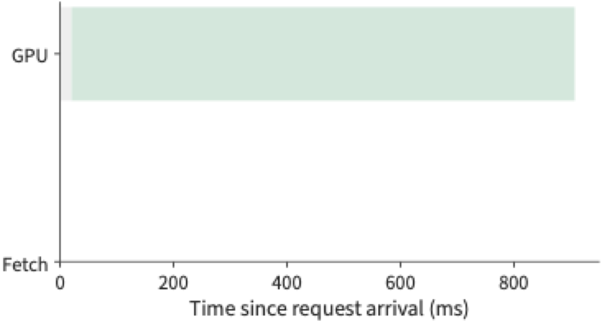
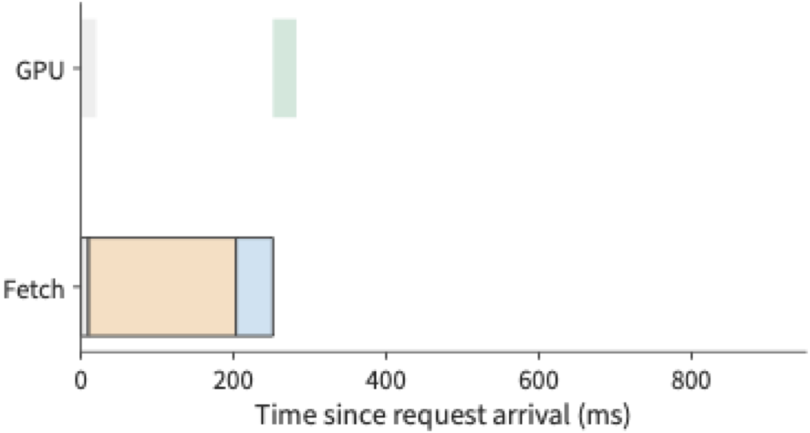
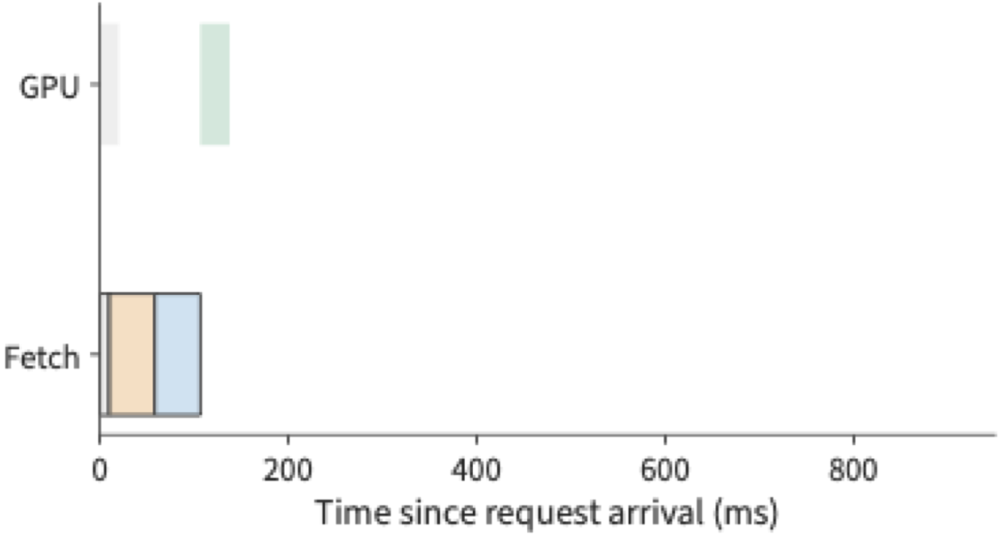
In the first routing figure, A's data is already on the GPU, but computation cannot begin until 250 ms. B is idle at 20 ms; direct recomputation can start immediately, but its 887 ms of computation is longer than any fetch path, while remote fetching must continue waiting for data. Increasing remote bandwidth shortens the orange segment; the lookup, the main-memory-to-GPU transfer, and the final computation remain.
For B to return earlier than A's 281 ms, after subtracting the 30.9 ms of post-hit computation, the state must be ready within 250 ms. Further subtracting the 10 ms lookup and the roughly 48.3 ms from host memory to GPU leaves only about 191.7 ms for the remote read. Dividing 1.125 GiB by this budget gives the bandwidth at which B's fetch ties A's local hit, about 6.30 GB/s: 50 GbE's 6.25 GB/s falls slightly below this value, while 200 GbE far exceeds it. The bandwidth at which fetching ties recomputation is only about 1.48 GB/s — recomputing an 8K prefix on an A100 is almost always the slowest option.
The same session can thus be rearranged by where its state and resources reside. The application retains a continuous context, while the service chooses among continuing to use local state, migrating state, or recomputing, based on when each of these three paths lets subsequent model execution begin. Chapter 8 determined reusable prefixes based on content; this section further folds queueing time and link bandwidth into the routing decision.
After switching to 200 GbE, remote fetching is clearly favorable for a single request; but 16 fetches per second require about 19.3 GB/s, already using about 77% of this 25 GB/s link's capacity. Bursts of requests increase transfer queueing time. So after computing the bandwidth required for a single request, we must also compute the total traffic under continuous arrival.25
The comparison above assumes the cache location is known and the data is available. Routers typically predict location based on cache events; event delays or object eviction can make the prediction inaccurate. To see how such error affects response time, change A's queueing time to 80 ms and assume the cache is truly available only with probability \(p\). On a hit, the time is 110.9 ms; if all tiers miss and recomputation is required, it is 967.2 ms; the expectation is
For the average to beat B's direct recomputation of 907 ms requires only \(p>7.0\%\). Taking \(p=0.9\), the average is about 196.5 ms, but 10% of requests still take 967 ms, so this two-point distribution's p99 is 967 ms, far from the 220 ms target. To reach a p99 of 220 ms, this two-point time model requires a hit probability of at least 99%; 90% already substantially improves the mean, yet still sends one in ten requests down the 967 ms slow path.26
A load-pressure experiment running two tasks simultaneously more directly illustrates the tradeoff between cache affinity and idle-instance preference. With cache affinity, the target request completes in about 1.38 seconds, and both tasks also finish at this time; moving the target request to the idle instance shortens its completion time to about 0.33 seconds, but both tasks then take until about 1.54 seconds to finish. The target request is about 1.05 seconds faster, but the completion time for all tasks is delayed by about 0.16 seconds. Before making a routing decision, one must first determine whether the objective being optimized is the target request's response time or the completion time of all tasks.27
Once the state-recovery process from Chapter 8 is folded into the routing decision, we must compare both when an instance becomes idle and when its state becomes ready. Take DeepSeek V4.1's session state as an example: suppose instance A retains the global KV and the encoder's SWA state, but has a queue; instance B can execute immediately, but must fetch the global KV and restore the encoder's SWA state. A's advantage is being able to reuse state, B's advantage is that compute resources can start immediately; what the router must compare is the two sides' expected completion time, not just the cache-hit flag.
Suppose both sides' subsequent processing of new input, decoder window replay, and generation take the same time, with preparation work executed serially. B's global-state transfer, per Chapter 7's calculation, is 4.666 ms, and the encoder SWA state restoration is assumed to be 8 ms, totaling 12.666 ms. A retains both pieces of state, so its preparation time is just its queueing time: at a 10 ms queue, A starts processing the new input sooner; at a 20 ms queue, B starts sooner. 12.666 ms thus becomes, in this example, the queueing threshold at which the routing choice flips.33
![Figure 9-41: Comparison of cache affinity versus idle execution location. A retains the global KV and encoder SWA; B needs 4.666 ms of global transfer and an assumed 8 ms of encoder restoration. The subsequent work common to both sides, such as decoder replay, is omitted, comparing only the differing serial preparation times; as A's queueing time grows from 10 ms to 20 ms, the faster option shifts from A to B. Gray is the waiting queue, and the other color blocks are the global-state transfer and encoder local-state restoration respectively.](images/figure-9-v41-routing.png)
9.6 Service Startup, Scaling, and Failure Recovery¶
Sections 9.2 through 9.5 compared where a request is handed off and where its state resides. This section turns to changes in the instance itself: how long a new replica takes to start and warm up, how state is handed off when the parallelism strategy changes at runtime, and how service continues after a partial card failure by relying on saved state and output records.
9.6.1 Startup and Warmup Overhead¶
The routing comparisons in Section 9.5.4 all began from instances that were already available. During scaling or failure recovery, a new instance must first complete startup while waiting requests keep arriving. This section therefore places startup and state recovery on the same service timeline. A new replica must also complete process and tokenizer (the component that converts text into token IDs) initialization, weight reading and sharding, compilation, KV capacity probing, and graph capture (recording execution steps as the CUDA Graph from Section 5.5.2). The total time for this preparation determines when the new replica can start taking on requests. When the first trial run triggers compilation, the compilation time is already included in that trial run, and the total time should be computed according to the dependency order. The startup overhead study Breaking the Ice, in its staged analysis of historical vLLM versions, illustrates this point; once the containment relationships are expanded, the total startup time is determined by the longest dependency path from process creation to being able to accept requests.28
Suppose preparing the execution graph adds \(T_s\) to startup time, but every subsequent execution step then saves \(\delta\); after \(N\) steps the net benefit is \(N\delta-T_s\). Adding 10 seconds and saving 0.2 ms per step requires 50000 steps to break even; only from step 50001 onward does the cumulative savings exceed the extra startup time. If each step generates one token for each of 32 requests, 50000 steps corresponds to about 1.6 million output tokens. Time is saved once per executed batch, so the cumulative benefit must be computed by the number of batch executions.
Newly arriving requests also pile up during startup. If the original service is completely unavailable, the arrival rate stays at \(\lambda\), and the startup time is \(T_s\), the backlog at the end of startup is about \(\lambda T_s\). Once ready, the service capacity is \(\mu>\lambda\); in an idealized continuous-flow model, the extra draining time is
Take this chapter's heterogeneous cluster as an example: startup takes 10 seconds, during which 3.5 requests arrive per second, leaving 35 requests backlogged once the service is ready. With direct PD ready at about 4.55 requests/s, new requests still take up 3.5 of that, leaving only about 1.05 requests/s of actual backlog-clearing capacity, requiring about 33 more seconds to drain—the 43rd second counting from the start of startup. With idealized chunked co-location at 4.17 requests/s, only about 0.67 requests/s go toward clearing the backlog, taking until the 63rd second; unchunked co-location, at only 3.02 requests/s, sees the backlog grow indefinitely. The three curves are shown in Figure 9-42.
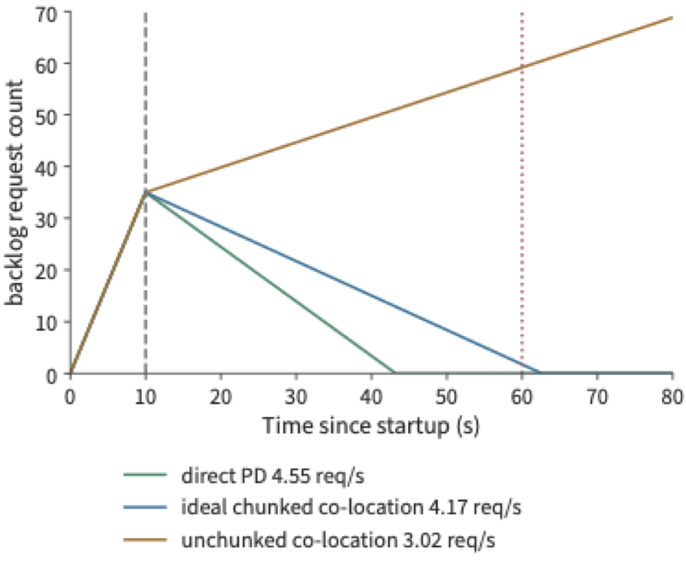
Backlogged requests tend to surge in together once the service is ready, and at that point concurrent prefetching can also change which request starts executing first. Consider a 1024-token request that, when run alone, reuses 1008 tokens; when eight requests arrive simultaneously, the first four each register a 1024-token prefetch, jointly occupying 4096 tokens, and the remaining requests fail to register because they exceed the capacity quota. The request that finishes first turns out to be one of the latter: it hits no cache at all and goes straight into prefill; precisely because it doesn't wait for a cache, it enters the execution queue earlier. So even when a cached object exists, a request must first obtain the space needed for prefetching before it can use that cache. Once the prefetch space is used up, later requests simply recompute directly, while requests that had already started prefetching are still waiting for their data.29
Scaling must also account for the correspondence between model version and hardware. When weights are fixed on immutable media, adding accelerators of the same type extends the same version's service; deploying new weights requires provisioning accelerators that support the new version. The router dispatches requests by model version, and capacity planning must reserve resources for old and new versions to coexist and for accelerator replacement. The longer a fixed version's service continues and the greater the demand, the more requests can share the deployment investment.
9.6.2 Runtime Reconfiguration and State Handoff¶
Startup addresses when a new instance becomes available; runtime migration must additionally let the target instance continue from where the source left off. Changing the tensor parallelism degree, expert parallelism degree, or service pool size requires rearranging weights and request state. Getting parameters onto the target card is only the first step; it may also require establishing communication groups, preparing a new execution graph, converting layouts, and resuming request reception. These preparation steps and data movements have dependency ordering that together determine when new requests can be handed to the target.
Planned migration can exploit the fact that the source is still running: first copy in the background any context that will no longer change while the source keeps generating; finally pause briefly, copy the state accrued during migration, and hand over execution to the target. Take migrating away a D worker on one H20 as an example: the average context across 32 requests in the batch is 8704 tokens, with total KV of about 41.1 GB. The source completes about 1166 decode calls per second, each appending one token's KV (144 KiB), so state grows by only about 0.172 GB per second. Copying to the target over this chapter's 200 Gbit/s NIC at 25 GB/s reduces the backlog at about 24.8 GB/s, finishing the copy in about 1.65 seconds, during which about 0.28 GB of new state accrues; with only a single 50 GbE port (6.25 GB/s) it takes about 6.76 seconds. The rate at which decode appends KV is far below the NIC bandwidth, so the catch-up time is determined almost entirely by the initial 41.1 GB; once the copy rate drops to the state growth rate, the backlog stops shrinking. The final handoff point fixes both the state version and the execution rights simultaneously, preventing the target from missing the source's last updates.
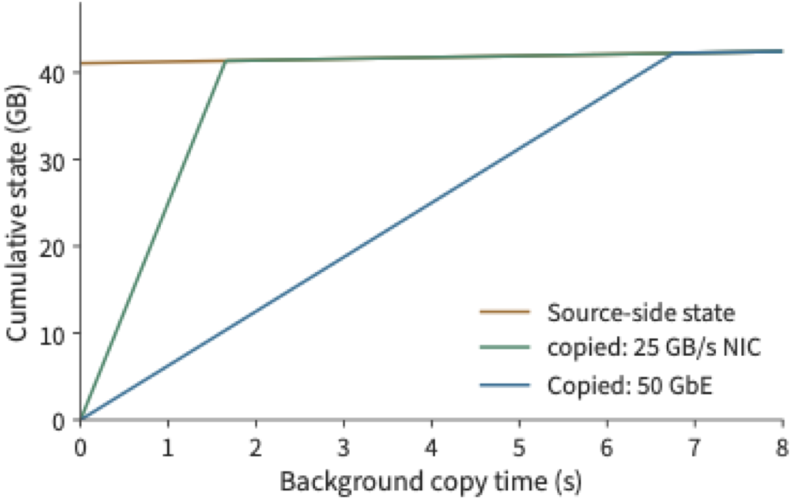
In Figure 9-43, the source's curve is also rising, so the catch-up speed is the difference between the two curves' slopes; in this example, decode's growth is extremely slow, so the source's curve is nearly flat. When the copy capacity exactly equals the state growth rate, the two lines run parallel, and the initial backlog never shrinks. The final handoff must be scheduled at the moment the target has caught up with the source and both sides' states match.
Another kind of runtime adjustment besides migration is switching parallelism strategy: reorganizing the same set of cards into TP or SP×TP. Here TP splits within-layer matrices, and SP allocates part of the computation and intermediate state by token position. Case studies from ArcticInference (Snowflake's open-source vLLM inference plugin) and vLLM illustrate this approach: switching changes which cards and which tokens participate in each step's computation, and also changes the required weights, KV layout, and execution graph. Pre-reserving weights and execution graphs for both modes can shorten the switching wait, but this extra reserved weight and graph memory reduces the space available for KV. When Elastic EP (runtime scaling of the number of cards in an expert parallelism group) expands an expert group, newly added cards must first obtain the expert weights before they can take on dispatched tasks; processing a complete request also requires the corresponding attention state.30
Only once the target has caught up with the source's state update do the two sides' data agree. The target must also complete preparation of the communication group and the execution graph. Below, the data volume is held fixed while only the transfer bandwidth is varied. The Qwen3-8B example of migrating from TP4 to TP8 requires transferring about 16.4 GB over the network, and building the target tensor locally also requires reading and writing about 4.7 GB of data. Putting the same network payload on a single 50 GbE port (6.25 GB/s) versus this chapter's 200 Gbit/s NIC (25 GB/s), the movement alone takes about 2.63 seconds versus 0.66 seconds—a fourfold difference.
But if we further assume that establishing the communication group, preparing the execution graph, and resuming request reception serially occupy 9 seconds after the transfer, the total time becomes about 11.6 seconds and 9.7 seconds respectively—only about a 17% reduction. If all eight cards sit within a single 8×A100 server and the migration instead goes over NVLink, at 300 GB/s per direction per A100, the card sending the most data—about 4.7 GB—needs only about 15.7 ms, and the total time is still about 9.0 seconds. This 9-second floor limits the benefit of further increasing bandwidth: even if network transfer approaches zero, the total time can only approach 9 seconds. If communication groups can be established and execution graphs prepared in advance, the migration wait can be shortened further.31
At this point the movement itself is already close to the link's physical lower bound, and all the remaining time is software preparation. By the criterion in Section 1.3.4, this kind of gap cannot be closed with faster links—only by restructuring the software: establishing communication groups in advance, pre-capturing execution graphs, decoupling processes from scheduling, and letting preparation overlap with transfer.
9.6.3 Partial Failure and Streaming-Generation Recovery¶
During a planned migration, the source can still provide a final update; after a failure, the source's data may no longer be readable, and recovery must rely entirely on previously saved state and output records. Recovery must first determine which portion of the output the user has already received. After a failure there are three possible goals: recover enough state to continue decoding; redo prefill based on already-determined tokens; or resample a segment of output. The first two continue the sequence the user has already received; the third makes a new random choice and may produce a different suffix. For RL rollouts, this also changes the sample generation process.
Suppose the original input has 8192 tokens and 1025 output tokens have already been returned to the user, but the most recently saved KV covers only the original input. During recovery, if these outputs are already reliably recorded, we only need to feed the first 1024 outputs back in as one prefill, rebuild KV covering 9216 tokens, and then process the 1025th output to continue generation. If a compatible KV covering 9216 tokens already exists, this replay of 1024 tokens can be skipped entirely.
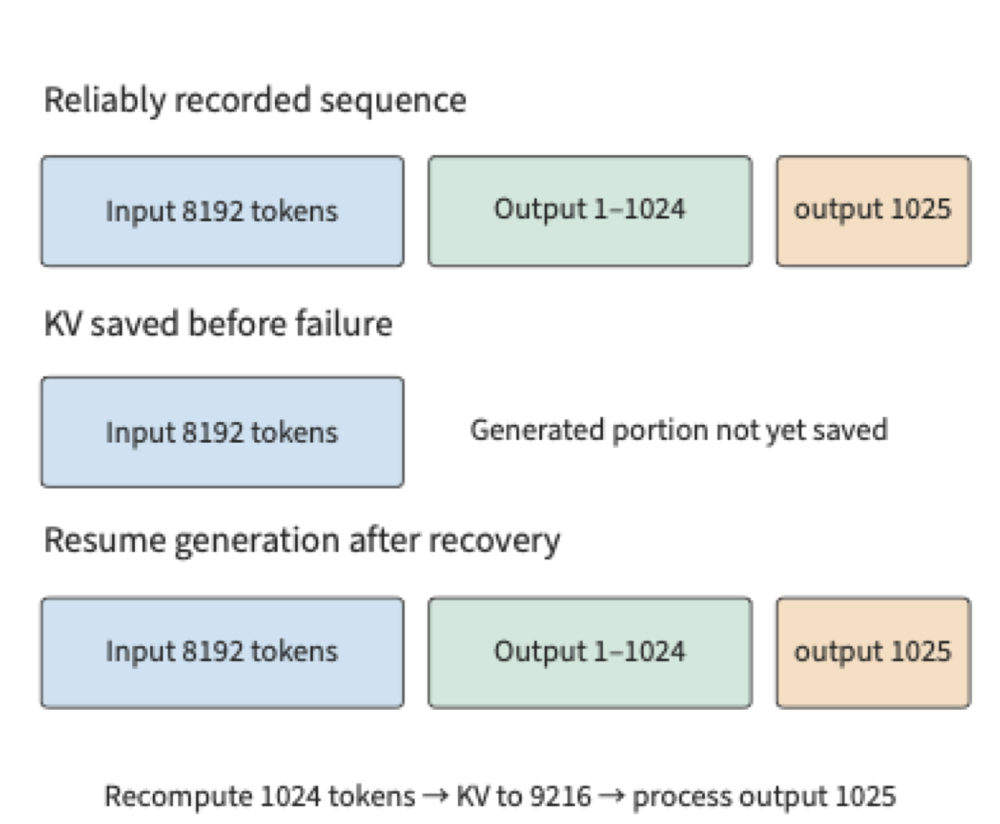
Figure 9-44 shows the endpoints of the two kinds of records separately. That an output has already been returned does not mean its corresponding KV has been saved; during recovery, using the already-recorded tokens to recompute reconstructs the same prefix without needing to resample those outputs.
A write-ahead log (WAL) reliably saves pending operations or results before they are confirmed externally. Here, the token-level WAL saves the already-determined output sequence, while the KV saves the computation already completed for that sequence. The former determines which output sequence to continue after recovery; the latter determines how much work must still be redone. DeepSeek V4's generation service uses this kind of mechanism; recovery must also keep the weight version, token position index, and decode state consistent.22
The scope of a failure's impact is determined by the synchronization group. Losing one card in a tensor parallelism group or expert parallelism group may stop all requests on that entire collaborating instance; other complete replicas can continue serving. Failure recovery proceeds through detection, instance reconstruction, and request recovery in sequence; the post-recovery processing capacity determines how much longer the backlogged requests take to complete. Chapter 10 further analyzes how these choices affect RL samples and training progress, and Chapter 11 addresses task recovery for tools and environments.
9.7 Comprehensive Comparison of Deployment Schemes¶
9.7.1 Combining Replicas, PD, AF, and Shared KV¶
This section applies the results of the previous sections to the eight-card service from the chapter opening, first determining the state transfer method and then comparing whether the overall service can meet the arrival rate and recovery deadline. The KV produced by P can be handed directly to D, or can first enter a shared pool for D to retrieve later; if D's newly generated state is to be used by the next round of P, it must also be confirmed as saved and published. Direct handoff and pool-mediated retrieval may transfer the same content, but occupy different links and buffers.
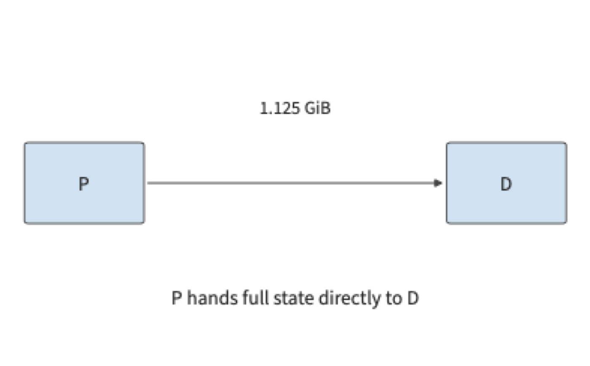
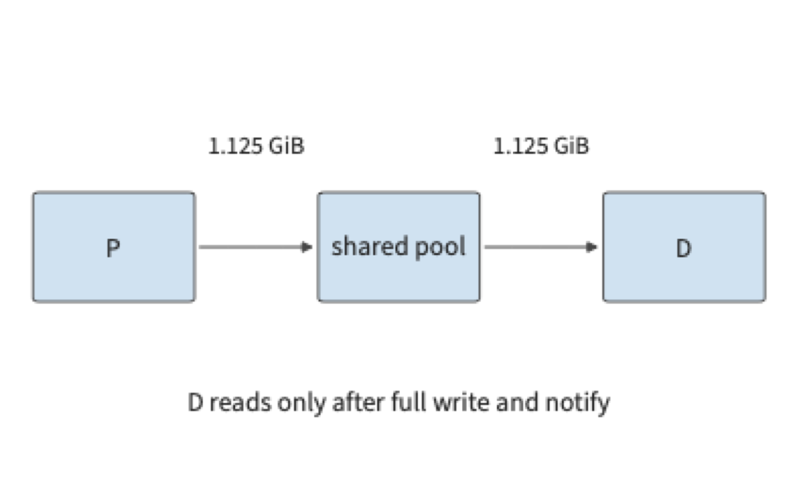
For this chapter's 1.125 GiB context KV cache, direct P→D handoff moves it once; pool-mediated transfer moves it once on each of the P→pool and pool→D edges, for a total payload of 2.25 GiB. Assuming both edges run at 25 GB/s and the full write must complete before reading, pool mediation adds about 96.6 ms of waiting, about 48.3 ms more than direct handoff.
If D only uses this state once, this mediation yields no reuse benefit. If another instance later continues the same session, however, there is an opportunity to replace a recomputation costing about 856 ms (the prefill time from Section 9.2.3) with a retrieval costing about 48.3 ms; the time saved is enough to offset the extra movement time. Section 9.7.3 quantifies this benefit against the workload of Example 9.8. A shared pool retains the computational result of one session for use by later requests; AF instead changes where each layer of the current request executes—the two change different parts of the timeline.
The same rule applies to visual input. The EC produced by E and the language KV use different cache identifiers and occupy different space; a hit on the image cache reduces E's work but does not automatically eliminate the subsequent language model's P stage. In the E→P→D execution graph, an EC hit reduces E's requirement, a language prefix hit reduces P's work, and the resource ratio adjusts as each stage's workload changes.
9.7.2 Comparing Schemes Under the Same Quality and Resource Constraints¶
Example 9.8: Which inference deployment can sustain service while clearing the startup backlog within the deadline? We use the resources and workload from the chapter opening: four A100 80GB SXM and four H20 SXM5 96GB, with 3.5 independent requests arriving per second, each with 8192 input tokens and 1025 output tokens. Each stage's capacity follows Example 9.2, and the two stages occupy the same card sequentially when running on it together. The two servers share a 25 GB/s payload channel, with every transfer sharing that same link bandwidth. Within the comparison window, model and generation settings are identical, and requests do not share reusable prefixes with each other. The service starts from a stopped state, and all three deployment schemes become ready after 10 seconds; after readiness, the queue is handled under the continuous-flow model. The design goal is to sustain processing of newly arriving requests and to clear the startup backlog within 60 seconds of the start of startup.
Capacity conditions must also be checked. After 1024 decode steps, each request's KV covers 9216 tokens, about 1.27 GiB. On one H20, with a resident batch size of 32 active requests, the total state is about 40.5 GiB; adding one reserved 1.125 GiB receive buffer plus about 15.3 GiB of weights gives about 56.9 GiB, which fits within the 96 GB (about 89.4 GiB) of GPU memory. Converted to compact MLA state, each entry is about 618 MiB; 32 entries plus one 549 MiB receive buffer total about 19.8 GiB. The A100 side only needs to hold two states simultaneously—one being computed and one being sent—totaling 2.25 GiB. The shared-pool scheme additionally has 64 GiB of state capacity. Requests not yet being executed retain only their input, and computation begins once cache space is allocated.
The table below compares three schemes: full replicas, direct-handoff PD, and PD with shared-pool mediation. The pooled scheme transfers each request twice over the shared channel because it writes the full object before reading it back; both read and write sides of the pool can reach the channel's bandwidth.
| Deployment scheme | P, D organization | Per-request channel payload | Compute capacity, requests/s | Channel capacity, requests/s | Post-startup overall throughput, requests/s |
|---|---|---|---|---|---|
| Eight full replicas | Each card runs both P and D | 0 | 3.02 | — | 3.02 |
| Direct PD | Four A100s do P, four H20s do D | 1.125 GiB | 4.55 | 20.7 | 4.55 |
| PD with shared-pool mediation | Same P, D ratio, P→pool→D | 2.25 GiB | 4.55 | 10.3 | 4.55 |
| Direct PD, compact MLA state | Four A100s do P, four H20s do D | 549 MiB | 4.55 | 43.4 | 4.55 |
| PD with shared-pool mediation, compact MLA state | Same P, D ratio, P→pool→D | 1.07 GiB | 4.55 | 21.7 | 4.55 |
Full replicas complete only 3.02 requests per second, persistently below the arrival rate of 3.5 requests/s, so this option is ruled out first. Both PD schemes' channel capacities far exceed 4.55 requests/s, so both are limited by the compute pool. Under a load of 3.5 requests/s, direct transfer consumes about 4.2 GB/s and mediation about 8.5 GB/s; during the 4.55 requests/s draining phase, they require about 5.5 and 11.0 GB/s respectively. With compact MLA state these four figures become 2.0, 4.0, 2.6, and 5.2 GB/s—the channel capacity doubles, but the conclusion does not change.
The two schemes have the same steady-state throughput, but direct PD better suits this set of requests. Later requests do not reuse these requests' prefixes, yet mediation doubles the channel's transfer volume and adds about 48.3 ms of wait per request. The 64 GiB shared pool can hold at most 56 complete 1.125 GiB prefixes, or 119 under compact MLA state; under this workload, none of the retained entries will ever be used again. Direct handoff accomplishes the same work while leaving more link headroom and shortening the handoff wait. This example therefore selects four A100s for P, four H20s for D, and direct P→D transfer.
Next we check whether this scheme can clear the startup backlog within the deadline. By the draining calculation in Section 9.6.1, the 35 requests backlogged after 10 seconds of startup drain by about the 43rd second (counting from the start of startup) under direct PD, meeting the 60-second target. Full replicas keep adding about 0.5 requests per second even after becoming ready, so by the 60th second the backlog has grown from 35 to about 59; even at the 4.17 requests/s of idealized chunked co-location, draining doesn't finish until the 63rd second, also missing the target.
Conversely, we can also derive the minimum service rate that meets this deadline. Startup takes 10 seconds, leaving 50 seconds to clear 35 requests while continuing to process the 3.5 newly arriving requests per second, requiring
Direct PD's 4.55 requests/s exceeds this minimum requirement by about an 8% margin. If actual kernel efficiency is only 90% of the value assumed in Example 9.2, D pool capacity drops to about 4.10 requests/s; the steady state can still handle the sustained arrivals, but only about 0.60 requests/s goes toward clearing backlog, pushing draining to about the 68.5th second and missing the target. The slope of each declining line in Figure 9-42 is exactly this net backlog-clearing capacity—service rate minus arrival rate.
Once we've confirmed the deadline can be met, we compare cost. When computing service cost, the resource billing method also matters. Suppose all eight cards are reserved by the hour, at a total cost of eight currency units per hour, and the service actually completes 3.5 requests per second, giving 12600 completed requests per hour, for a cost of about 0.63 currency units per thousand requests. If the arrival rate remains 3.5 requests/s, the 4.55 requests/s capacity doesn't conjure up extra requests to process; the surplus capacity is used to absorb bursts and clear the startup backlog.
Comparing the amount handled at full load, 3.02 and 4.55 requests/s correspond to about 0.74 and 0.49 currency units per thousand requests respectively. If the business also sets a completion deadline, and only a quarter of the requests in the latter scheme qualify, the qualifying rate drops to about 1.14 requests/s, and the cost per thousand qualifying requests rises to about 1.95 currency units. This is generally written as
The numerator varies with compute resources, main memory, network, and standby instances kept running; the denominator varies with actual arrivals and qualifying completions. Take an agent that exits early as an example: it may generate fewer tokens and consume fewer resources, but since it didn't complete the task, this exit does not count toward the completed qualifying task count.32
9.7.3 Deployment Adjustment After Workload Changes¶
Now let's change the condition in Example 9.8 that "prefixes are never reused." Suppose another instance will reuse each session's 1.125 GiB context KV cache one additional time. Recomputing these 8192 tokens on an A100 takes 0.856 seconds, while retrieval takes only 48.3 ms. The 48.3 ms extra cost already paid for mediation, plus the 48.3 ms for the subsequent retrieval, totals about 96.6 ms—far below the 856 ms of recomputation; a single subsequent reuse nets a savings of about 760 ms. The shared pool thereby gains a concrete purpose: substituting a shorter read for repeated computation.
This benefit simultaneously increases the demand on the channel. Each original handoff writes once and reads once; the subsequent reuse reads once more, for a total of 3.375 GiB moved. At 3.5 such request-pairs arriving per second, this requires about 12.7 GB/s; the channel can support at most about 6.9 request-pairs/s. With compact MLA state, the three transfers total 1.61 GiB, requiring about 6.0 GB/s at 3.5 request-pairs/s, and the channel can support up to about 14.5 request-pairs/s. Compared with a single transfer, subsequent reuse increases the read volume, consuming the bandwidth headroom that previously existed. The shared pool saves recomputation while also lowering the ceiling on request-pair throughput the channel can support.
What the shared pool changes is the number of transfers. Below, we fix D as having no cache and instead vary how much input P must recompute, examining whether resource allocation should also adjust. Suppose P already hits locally on 6144 tokens, while D remains empty. Following the calculation in Section 9.2.4, full replicas jointly reach about 4.90 requests/s; the original four-A100-P, four-H20-D split remains at 4.55 requests/s; and switching to two A100s for P with the remaining six cards for D reaches 5.69 requests/s. Assuming the same 10-second startup and 3.5 requests/s arrival rate, the three schemes drain by about the 35.1st, 43.2nd, and 26.0th seconds respectively, counting from the start of startup. After the prefix hit, full replicas actually drain earlier than the original PD ratio, which is no longer the best choice; two A100s for P with the remaining six cards for D is the best division of labor for this workload.
Now restore the no-hit input but increase output to 4097 tokens—that is, requests requiring longer inference. The best division of labor becomes two A100s for P and the remaining six cards for D, but this only reaches about 1.26 requests/s. At this point, no matter how the P:D ratio is adjusted, the original eight cards cannot handle 3.5 requests per second. Replicating three such eight-card deployments gives a combined capacity of about 3.78 requests/s, just barely sustaining the arrival rate; if the same startup and draining deadline is also required, the necessary capacity is at least 4.2 requests/s, and four groups provide about 5.04, so four groups must be configured. Scaling the original compute resource combination by groups, sustaining the arrival rate requires 24 cards, while meeting the recovery deadline requires 32. The purpose of the extra compute resources is to speed up the decay of backlog.
This also gives the order in which this chapter's derivations should be applied to a new system. First convert each request's workload into resource requirements across categories; then use integer resource allocation to find the busiest resource pool or execution unit; account for state transfer time and memory footprint in execution order; and finally use the remaining processing capacity—service rate minus arrival rate—to determine how long a burst or startup backlog persists. If the bottleneck is D, adding more P won't reduce the backlog; if the bottleneck is the shared channel, adding more compute replicas will only make more requests wait for retrieval.
The PD eight-card case and the MoE expert case connect here. The former hands each stage to compute resources better suited to that stage; the latter reduces weight reads through within-batch reuse and then spreads work on the busiest execution unit across expert replicas. The shared KV instead preserves completed computational results for reuse by future requests; startup and recovery determine when these compute resources can begin serving. The basis for a deployment choice is how much computation and waiting time these deployment methods collectively change, and how long it takes to clear the backlog.
Speeding up a single stage also changes the instance ratio. Suppose the link has ample capacity, each P instance processes 20 requests per second, and each D instance completes 5 of the same requests per second; one P paired with four Ds balances the two pools' capacities. If the D stage speeds up fourfold, keeping the original ratio would push the D pool's capacity to 80 requests/s while P remains at 20; switching to one P per one D gives both pools 20 requests/s and frees up three D instances. The benefit of speeding up one stage thus manifests as needing fewer resources to accomplish the same work.
Exercises¶
The exercises proceed through recomputation, changed conditions, and independent design. The first two questions establish a common request unit; problems three through nine each change computation, communication, or state conditions; problem ten works through the design of a new workload; and problem eleven redoes the judgment with the handoff state changed to MLA. Problems marked "core" run across multiple resource layers.
9-1 Invocation counts and state handoff for three inference deployment schemes. For a request with 8192 input tokens and 1025 output tokens, diagram the full-replica, PD, and shared-KV deployment schemes, listing for each the number of invocations per request, where the KV is produced, and the cross-instance handoffs. Then change the output length to 1 token and identify which work no longer needs to run. Finally, consider the case of continuing generation after one tool call, and mark the position of the last token that has been returned but whose corresponding KV has not yet been generated.
9-2 How link bottlenecks and request composition change the PD ratio. Recompute the 25 integer allocation schemes from Example 9.2, this time setting the effective link bandwidth to exactly the bandwidth needed to transmit one 1.125 GiB snapshot per second (about 1.21 GB/s). Find the new upper bound on aggregate throughput; when the arrival rate exactly equals this bound, add ten requests all at once and find how the backlog changes over time. Then re-check the two scenarios of prefix hits and 129 outputs. Finally, change the stage efficiency assumption from 50% to 40% of peak, re-derive the prefill and decode capacities for the two card types, and determine whether four A100s doing P and four H20s doing D still exceed the 3.5 requests/s arrival rate.
9-3 How expert batch size, instruction set, and weight bit-width change the CPU execution bottleneck. Using the expert shapes from Example 9.3, find, separately for the AVX-512 and AMX kernels, the number of tokens received per expert at which CPU execution shifts from being read-bound to compute-bound; then recompute both crossover points with memory bandwidth changed to the cross-socket value of 125 GB/s. Compare the execution time when each expert receives 1 token versus 128 tokens. Change the weights to one byte per element while holding effective CPU compute constant, re-solve for the intersection of the read and compute curves, and explain which direction it moves.
9-4 Transfer volume, startup count, and communication overlap for PD and AF[core]. Using Qwen3-8B, with effective handoff bandwidth of 25 GB/s, and startup overheads of 1, 5, and 20 μs respectively, compare a single 1.125 GiB handoff against 72 handoffs totaling the same number of bytes. Then, using the actual AF payload sizes from Example 9.4, compute the cumulative handoff time for a complete request with 8192 input tokens and 1025 output tokens.
Also consider four independent micro-batches, each taking 2 ms on the attention side and 3 ms on the feedforward side. Compare the total time for fully serial execution against an ideal two-stage pipeline, then find, subject to the pipeline scheme still being faster than the serial scheme, the maximum combined increase in extra communication time and efficiency loss that the critical path can absorb.
9-5 Weight capacity and CPU throughput constraints for heterogeneous inference. Restore the weight storage, GPU buffer, and main memory requirements from the saved DeepSeek V4-Flash or Kimi K2 configuration. After increasing request concurrency, predict the number of experts accessed, the task count for each expert, and the most heavily loaded NUMA node. Then construct a set of request conditions where the total weights fit but the arrival rate exceeds CPU compute capacity, and derive the backlog growth rate.
9-6 Capacity constraints on expert replicas and recovering replication cost. Given eight experts receiving \([32,16,8,4,2,1,1,0]\) rows of input respectively, compare the computation cost when computing only the valid rows, when padding the non-empty experts' inputs to 32 rows, and when padding every expert's input to 32 rows. Then, under the conditions of Example 9.6, find the minimum number of batches needed for the cumulative time saved to first exceed the replication cost; then change the per-card extra capacity to 32 MiB and explain why infeasible replica schemes should be ruled out first. If the hotspot changes over time, explain how to predict the cumulative benefit of replication from the load observed in a monitoring window, and compare it against the migration cost.
9-7 Conditions for the benefit of saving, retrieving, and recomputing KV[core]. Given a prefix KV occupying 1.125 GiB, and assuming subsequent requests will use this prefix a total of 100 times, compare the total time for three approaches: recomputing once and keeping it resident, retrieving once and keeping it resident, and reading remotely on every use. Further account for write time and the time the cache is retained between two requests, and derive when saving the KV is more worthwhile than recomputing it; design an example where a change in available HBM capacity forces state to be swapped out of HBM. Using the existing dual-engine records, explain which reuse opportunities are preserved when the shared CPU pool grows from 4 GiB to 8 GiB.
Then, using the per-card configuration of the DGX A100 from Section 9.5.2, compute: with an interval of 5 minutes between two uses of the same prefix, what minimum cache capacity does each GPU need, and which storage tiers are involved? For new inputs of 128 and 512 tokens respectively, what is the total time to preload layer by layer from host memory, and how many layers must be read in before computation starts so that the reads are fully hidden by computation? Finally, using the D7-P5520's 1 DWPD rating, find the proportion of new KV that the SSD can sustainably accept over the long term; if the prefix hit rate is 50%, halving the rate of new KV production, what does this proportion become?
9-8 Recovery choices for KV page faults and version incompatibility. Explain the difference between the two ways of counting when 1024 tokens' worth of KV is read but only 1008 of those tokens are actually reused. For page faults, truncated pages, and version incompatibility, respectively propose conditions under which to keep waiting, partially recompute, or abandon the cache. Explain how to check, respectively, whether the request can complete, whether the cached data is repairable, and whether the output matches what would result without using the cache.
9-9 The bandwidth crossover for cache routing and tail latency of the first token. Derive the bandwidth at which B's remote retrieval respectively equals A's local hit and B's local recomputation time in Example 9.7, and compute, for \(p=0.5,0.9,0.99\), the mean first-token time when choosing path A, as well as the p99 defined via the inverse cumulative distribution. Then suppose that when the HBM replica is unavailable, the CPU replica is still available, and the retrieval process can overlap with an 80 ms queueing time. Check whether the original two-point distribution model still applies.
9-10 PD scaling and queueing under a mixed long/short output workload[core]. Continuing Example 9.8, suppose half of the 3.5 requests per second output 1025 tokens and the other half output 4097 tokens, all with 8192 input tokens and no prefix hits; capacity within each pool is allocated according to long-term average workload. First, using the method of Example 9.2, find the D GPU-seconds for the two card types at both output lengths, obtain the average D requirement per request, and then enumerate all integer combinations for allocating the eight cards between the P and D stages. Allow replicating the same eight-card combination, and find the minimum number of groups needed for each of two goals: sustaining the incoming arrival rate; and, with a 10-second startup time, clearing the backlog by the 60th second after startup begins. Finally, concentrate the long-output requests into the first ten seconds of every minute, plot the resulting queue, and explain which time window determines the capacity choice when the average demand is unchanged.
9-11 PD/AF judgment for MLA versus GQA. Replace the handoff state used throughout this chapter with DeepSeek-V3's compact MLA representation (61 layers, \(d_c=512\), \(d_r=64\), BF16), keeping the stage capacities of Example 9.2, the AF payload of Example 9.4, and the 5 μs startup unchanged. First find the state byte count for 8192 tokens, and the time for one PD handoff at 25 and 50 GB/s; then find the link term of \(\mu_{PD}\), and give the bandwidth threshold above which the link becomes the binding constraint. Using \(\alpha^*=(V_{KV}-V_{AF})/(71B)\), find the critical startup time for both link speeds, and state, for outputs of 1025 and 4097 tokens, how many times the cumulative 1024-step and 4096-step AF handoffs are relative to a single PD handoff. Finally, add the query transformation cost of 2.05 GFLOPs per step into the D pool, find the resulting change in D pool capacity using H20's effective compute of 74 TFLOP/s, and determine whether four H20s are still sufficient.
Worked example: At what batch size does CPU expert execution shift from read-bound to compute-bound? When the read term and compute term of the single-expert CPU path are equal,
Here, with BF16 using two bytes per parameter and two floating-point operations per parameter per row, the two coefficients cancel exactly. The AVX-512 kernel's 1.8 TFLOP/s and 220 GB/s give \(m\approx8.2\): below nine tokens per expert, the wait is dominated by reading weights; above that count, it is dominated by compute. The AMX kernel's 21.3 TFLOP/s pushes this crossover to about 97 tokens. When a thread reads memory on another socket, bandwidth drops to 125 GB/s, moving the two crossover points to about 14 and 170 tokens respectively; the read time for a single row's weights increases by about 76%, and the AVX-512 kernel remains compute-dominated at 128 rows.
The crossover point here answers a different question than the 71/72 and 688/689 row boundaries in Figure 9-14. The former is the boundary at which the CPU shifts from being bandwidth-bound to compute-bound; the latter compares the complete CPU and GPU paths, including weight movement. Once the CPU passes its crossover point it is compute-bound, but it can still outperform the GPU path — which must first move the weights — until the accumulated compute cost exceeds this movement cost.
Chapter Summary¶
Distributed inference distributes a single request's computation and state across multiple locations. PD, AF, expert placement, and shared KV all require weighing the benefit of local execution against the added handoff, and capacity, service rate, startup, and recovery together determine whether a deployment is appropriate. Routing not only selects idle compute resources but also determines which state can be reused. The same derivation gives different answers for different context representations: switching the handoff state from GQA to compact MLA halves the PD handoff time, doubles the link term of \(\mu_{PD}\), leaves AF's per-layer handoff unchanged, and correspondingly shortens the critical startup time.
After a hardware change, first fix the request and deployment to identify the new bottleneck, then reallocate resources across stages. The next chapter turns to training, discussing the continuous updating of parameters and training state, and how training progress advances.
-
Weight, state, and communication ownership for the same MoE request. Its TP2×EP4 configuration, processing of the same batch of requests, and FP32 transmission format are explicit teaching conditions, used to concretely illustrate communication ownership. ↩
-
Archived material on DistServe, Splitwise, and stage placement can be found in this chapter's extended material and research on stage division of labor and state handoff. ↩
-
PD/AF handoff computation for Qwen3-8B, using fixed official model shapes, byte counts, and startup assumptions. The generating script reads a JSON file of the same name. 25 GB/s uses decimal units, 1.125 GiB uses binary units; the exact payload is 1207959552 bytes, pure transfer time is 48.31838208 ms, and with the added 5 μs it is 48.32338208 ms. The cumulative AF handoff time for 1024 decode steps of one request is given in the corresponding results. ↩
-
Heterogeneous P, D integer allocation, eight-A100 homogeneous comparison, eight-H20 homogeneous comparison, prefix hit, 129 outputs, 4097 outputs. Each result's
derived_stage_ratesfield lists, per card, the FLOPs, read volume, both Roofline times, and the binding resource for prefill and decode. ↩ -
Stage capacities are derived by the pd-pool computation from the hardware table and a per-operator forward-pass accounting for Qwen3-8B. The A100 80GB SXM peak figures are taken from the NVIDIA A100 datasheet. NVIDIA has not published an H20 datasheet; the model and capacity are taken from the AI Enterprise vGPU documentation, and the BF16 compute and memory bandwidth are taken from Table 3 on page 8 of MegaScale-Infer; the same table's A800 and H800 rows match the NVIDIA datasheets. The 50% calibration comes from Section 8.6.3 and the per-round efficiency records of Experiment 8-1. ↩
-
PD/AF handoff computation for the compact MLA state, along with MLA and GQA comparisons at 50 GB/s; the per-token byte count matches the deepseek-v3 row of the cross-model cache computation. \(d_c=512\) and \(d_r=64\) are taken from page 12 of the DeepSeek-V2 paper; V3 uses the same attention configuration. The exact payload is 575,668,224 bytes; pure transfer at 25 GB/s is 23.02672896 ms, and the critical startup time is 23003136/71 ns. ↩
-
P, D integer allocation under the compact MLA state, 50 GB/s link, and GQA state 50 GB/s comparison. The compact path's extra 2,046,820,352 FLOPs per step are given by the
mla_compact_pathfield of the MLA handoff results, and match the kv_b_proj row of the V3 single-step decode operator table layer by layer. ↩ -
Weight offloading and execution location and implementation version notes. ↩
-
AVX-512 kernel, 1 token per expert, 128 tokens; AMX kernel, 1 token, 128 tokens; each result's
locality_reuse_regionsfield gives the two crossover points at 71/72 and 688/689. CPU kernel throughput is given on pages 4 and 6 of the KTransformers paper; memory bandwidth and PCIe configuration are on page 10; the A100 40GB PCIe peak is from the hardware table. ↩ -
Public KTransformers experiment records. The tutorial platform is dual 6454S + 4090; the paper's platform is dual 8452Y; the published Expert Deferral results include both cases of quality improvement and quality degradation. ↩
-
DeepSeek V4-Flash and Kimi K2 configuration records. The concurrency limits in the table are taken from the deployment configuration. ↩
-
Cross-machine execution and framework evolution and the basis for the AF extension. ↩
-
Payback computations for replication within the same HGX via NVLink and cross-server replication via ConnectX-7. These examples hold routing and per-card extra available space fixed, and compute preparation time under serial replication. H100 SXM's 989.4 TFLOP/s and 3350 GB/s are from the hardware table, both taken at 50%; NVLink's 450 GB/s per direction is from the NVIDIA H100 spec; the NIC's 50 GB/s per direction is from the ConnectX-7 datasheet. Preparation times are 0.62220256 ms and 5.31982304 ms respectively; the saving per batch is 402784256/1675 ns (about 0.2404682 ms); the minimum of 3 batches and 23 batches are computed using unrounded values. ↩
-
DGX A100 datasheet (8×A100 80GB, 2 TB host memory, 8×3.84 TB U.2 NVMe, 8 single-port 200 Gbit/s NICs) and the Solidigm D7-P5520 product brief (128K sequential read/write up to 7,100/4,200 MB/s, 1 DWPD over 5 years). The capacity, retention duration, retrieval and write times, per-layer preload layer counts, and SSD write allowance in this section are given by the multi-tier KV storage computation; run
python3 calculations/calc.py kv-tiersto recompute. Host memory is divided evenly among the 8 GPUs from 2 TiB total; SSD read/write use the spec's peak values. ↩ -
Wang et al., KVCache Cache in the Wild (USENIX ATC 2025), Section 3.4: Trace A is a personal-user conversational workload, Trace B is an API workload; the capacity conclusions apply to GQA models and are estimated by the maximum request rate per instance. ↩
-
Mooncake technical report, Section 4 and Table 1 (a one-hour sampled trace with 23,608 requests, averaging 7590 input tokens); the concentration of the Alibaba Cloud trace is discussed in the paper cited in the previous note. ↩
-
Gao et al., Cost-Efficient Large Language Model Serving for Multi-turn Conversations with CachedAttention (USENIX ATC 2024), Sections 3.2–3.3 describe per-layer preloading, asynchronous saving, and queue-based prefetching and eviction; Sections 4.3.2–4.3.3 give measurements of preload buffers and hit rates. ↩↩
-
The state persistence and generation service content of the DeepSeek V4 technical report, and this chapter's reading notes. ↩↩
-
Restart page read and effective reuse accounting; the read volume is 144 MiB and the effectively reused volume is 141.75 MiB. Of the 64 pages (1024 tokens) read, 63 pages (1008 tokens) were reused. ↩
-
Comparison of prefetch policies for truncated pages; the experimental observation window is 60 seconds. ↩
-
Cache routing computations for retrieval via 50 GbE and retrieval via 200 GbE, covering the full serial path from remote → host memory → GPU; the recomputation and post-hit computation times are obtained by dividing the matrix FLOPs by 50% of A100 80GB SXM's 312 TFLOP/s. The A100's PCIe 4.0 provides 64 GB/s combined send/receive, per the A100 80GB datasheet. ↩
-
Research on cache events and routing decisions, two-point distribution for cache invalidation. ↩
-
Paired accounting for real routing pressure, distinguishing completion time for the target request versus the complete task pair; the original conditions are preserved alongside the results. ↩
-
Compiled research on Breaking the Ice; the research uses vLLM v0.10.1.1. ↩
-
HiCache request branch observations, using the event chain for the same request ID to explain the quota and effective hit rate. In the original record, the prefetch quota is 3289 tokens, with 4096 tokens already registered as occupied; the eight requests are issued simultaneously by the client, and the GPU runs at most one request at a time. ↩
-
Research on dynamic parallelism and state conditions, research on expert dispatch and scaling. ↩
-
Serial migration computations via 50 GbE, via a 200 Gbit/s NIC, and via A100 NVLink, giving a lower bound on migration time from the payload, link bandwidth, and nine serial preparation steps of 1 second each. The A100 SXM's NVLink provides 600 GB/s combined send/receive, per the A100 80GB datasheet. The KV byte count and decode invocation rate for background replication are taken from the H20
derived_stage_ratesin heterogeneous P, D integer allocation. ↩ -
The capacity, shared channel, startup time, drain target, and cost in Example 9.8, along with the service-level pass ratio (SLO), are all textbook assumptions used to derive how conditions change. Unit cost is computed as the full hourly cost divided by (3600 × effective request rate). The serial preparation time for the migration example is set to 9 seconds. ↩
-
Official DeepSeek V4.1 technical report, Sections 1, 2, 3, and 6; fixed conditions and recomputation for the cross-chapter running session. ↩
-
DeepSeek-V3/R1 inference system engineering report, covering large-scale EP, three types of load balancing, and communication precision; DeepEP V2 reading snapshot. Sources and version boundaries. ↩↩↩
-
Fixed inputs for large-EP and expert-separation skew, computation script, recomputed results. NIC and NVLink bandwidths are from the HGX H100 datasheet, the NVIDIA H100 spec, and the ConnectX-7 datasheet; H100 compute is taken at 50% of the peak in the hardware table; the computed outputs are lower bounds for the listed execution models, and the pipelining and flattening multipliers for the two micro-batches in Section 9.4.3 are given by the same results. ↩↩
-
Fixed inputs for EP scale and busiest-card load, computation script, recomputed results. The hotspot scenario uses exact fractions; the random scenario uses a fixed random seed; only valid row counts are tallied, excluding padding, weight reads, and communication. DeepSeek's decode deployment with EP144, 32 redundant experts, and 2 routed experts per card is described in the DeepSeek-V3/R1 inference system engineering report. ↩
-
Zhu et al., MegaScale-Infer, arXiv:2504.02263v1, §6 on load balancing, §7.1–7.2 for experimental conditions and throughput; CRAFT, MLSys 2026, abstract, §3–5; Demystifying the Mixture of Experts Serving Tax, MLSys 2026, §3–5. The excerpted material, reading scope, and applicability of the figures are given in this research record. ↩↩↩